- Index
 ImageMagick Examples Preface and Index
ImageMagick Examples Preface and Index
 Art-like Transformations
Art-like Transformations
- Computer Vision Transformations
- Shade 3D Highlighting
- Using FX, the DIY Image Operator
- Evaluate and Function, Fast FX Operators
- Evaluate, Simple Math Operations
-
Set,
Add,
Subtract,
Multiply,
Divide
- Evaluate Math Functions
-
Pow,
Log,
Sin,
Cos
- Function, Multi-Argument Evaluate
- Polynomial, Sinusoid, ArcSin, ArcTan
- Mathematics on Gradients
These operations produce major changes to the overall appearance of the image
either for visual, or art-like effects. However while the overall look of the
image has changed, often dramatically, the original image itself is still
generally visible in the result.
Art-Like Transformations
Raise or Sunk Borders
The "
-raise" operator is
such a simple image transformation, that it almost isn't. All it does is
as a rectangular bevel highlight to an existing image.
convert rose: -raise 5 rose_raise.gif
| |
![[IM Output]](rose_raise.gif)
|
An inverted sunken effect can be generated using the 'plus' form of the
operator...
convert rose: +raise 5 rose_sunken.gif
| |
![[IM Output]](rose_sunken.gif)
|
This operator is a bit like
Framing an image,
but instead of adding extra pixels as a border, the "
-raise" operator re-colors the
edge pixels of the image. This makes it an image transform.
  |
In actual fact Image Framing is achieved
by adding a Border, then raising it!
|
 |
The operator only works on rectangular images, and will fail for images with
a transparent background, as the color modifications will also be transparent.
Basically is it a rather dumb operator!
|
Adding an Inside Border
Rather than adding a border around the outside of an image an user wanted to
add one to overlay the edges of an image. The solution was to draw a
rectangle around the image. As the built in rose in is 70x46 pixels, this is
the result.
convert rose: -fill none -stroke navy -strokewidth 11 \
-draw 'rectangle 0,0 69,45' inside_border.jpg
| |
![[IM Output]](inside_border.jpg)
|
The width of the border added is controlled by the "
-strokewidth" of the
rectangle. That is
{stroke width} = {border width} * 2 - 1
As such the above 6 pixel border needed a "
-strokewidth" of 11.
If you don't know the size of the image, then you can
Shave the image then add the
Border as
normal. This is probably easier, though prehaps not as versatile.
convert rose: -bordercolor green -shave 6x6 -border 6x6 inside_border2.jpg
| |
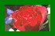
|
Random Pixel Spread
The "
-spread" would
replace each pixel the color of a random nearby color from the source image.
This random selection was made as per the use of
Pixel Interpolation and
Virtual-Pixel Setting.
For example...
convert -size 80x40 xc:red xc:blue -append -spread 5 spread_interpolated.png
| |
![[IM Output]](spread_interpolated.png)
|
If you were to examine the pixels image you will see that some pixels may have
a mix of red and blue colors. That is they are interpolated, not simply spread
or swapped. This is more pronounce smaller distance values.
Also note that "-spread"
also makes use of the Virtual-Pixel
Setting.
convert -size 80x80 xc: -virtual-pixel black -spread 10 spread_virtual.png
| |
![[IM Output]](spread_virtual.png)
|
As you can see you get a randomized border, mostly of pure black virtual
pixels Though there are a few grey pixels interpolated from the border between
the real pixels of the image and virtual pixels.
To get a more traditional spread pixels effect, you can prevent this color
mixing by forcing the color lookup of specific pixels by using "
-interpolate Nearest". To avoid the problems with
virtual pixels and posible 'edge color bias', I recommend you use "
-virtual-pixel Mirror".
As such this is a more traditonal random 'spread' of pixels...
convert rose: -interpolate nearest -virtual-pixel mirror \
-spread 5 spread_rose.png
| |
![[IM Output]](spread_rose.png)
|
 Under Construction
Under Construction

The main problem with the above is that you can lose some pixel data from the
image. That is the pixels are not 'swapped' but randomally copied, which
means a specific pixel in the image may become duplicated or lost.
As of IM v6.9.2-2 you can use "
+spread" to actually swap pixels within the image, meaning that no
pixel in the image will be duplicated or lost. Every pixel in the original
image is still present, just displaced to to new location.
However due to the way pixels are processed, pixels may be 'double-swapped'.
That is a specific pixel may be swapped, but then selected to be swapped again
with a later pixel. That means a specific pixel could drift further than was
requested by the spread argument.
This double swapping also mean that pixels were likely to spread further
toward the lower right corner. That movement is of course balanced but
a smaller drift of a large number of pixels toward the upper-left.
For example, here I spread pixels with the original prepended as a referance.
convert -size 40x40 xc:red xc:blue -append \
\( +clone +spread 5 \) +append spread_bias.png
| |
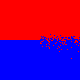
|
Note how some red pixels are spread downward more, though you also get a few
blue pixels spreading upward more than expected too ( though toward the left
side of the image). This problem is more pronounce when you use a smaller
distance argument to spread.
A solution to this double-swap problem is not easy, and we are looking for
a 'limited area shuffle' algorithm to solve it. But in the mean time you can
at least mitigate the directional bias by doing the spread twice, with a the
Transverse (top-left to bottom right
diagonal mirror) distortion.
convert -size 40x40 xc:red xc:blue -append \
\( +clone +spread 5 -transverse -spread 5 -transverse \) \
+append spread_no_bias.png
| |
![[IM Output]](spread_no_bias.png)
|
Of course this does makes the spread more pronounced, and less linear, but at
least it is without a directional bias, or pixel duplication/loss.
The above addition was developed from a Forum Discussion: t=28043 IM
Forum Discussion
rearrange vertical
pixel row .
Vignette Photo Transform
A special operator to make an image circular with a soft blurry outline.
convert rose: -background black -vignette 0x5 rose_vignette.gif
| |
![[IM Output]](rose_vignette.gif)
|
By using a zero (or very small) sigma you can remove the blur, and generate
ellipse or oval frames. However note that it does not actually use the
largest ellipse posible, so you may want to DIY it.
convert rose: -background black -vignette 0x0 rose_vignette_0.gif
| |
|
You can use it with transparency (and PNG format)...
convert rose: -alpha Set -background none -vignette 0x3 rose_vignette.png
| |
|
An alternative argument method is to use a very large number for the second
sigma component, and then use the first
radius to define the
spread of the blur. This produces a 'linear' distribution rather than a
more common Gaussian distribution to the vignette blurring.
convert rose: -background black -vignette 5x65000 rose_vignette_linear.gif
| |
|
Another technique for a more rectangular vignette, producing soft edges to the
image is demonstrated in
Thumbnails with
Soft Edges.
Complex Polaroid Transformation
Thanks to the work done by Timothy Hunter, (of RMagick fame), a "
-polaroid" transformation
operator, was added to IM v6.3.2.
Polaroid® is a registered trademark of the Polaroid Corporation.
|
Note the resulting image has a semi-transparent shadow, so you either have
to use a PNG format image, or "-flatten" the result onto a fixed background color for GIF or
JPG formats.
|
This operator is very complex, as it adds border (as per the "
-bordercolor" setting),
'curls' the paper, and adds an inverse curl to the shadow. The shadow color
can be controlled by the "
-background" color setting.
As you saw above the plus form of the operator will rotate the result by a
random amount. This operator makes a
Index of Photos much more interesting and less static than you would
otherwise get.
The minus form of the operator lets you control the angle of rotation of the
image.
convert spiral_stairs_sm.jpg -thumbnail 120x120 \
-bordercolor AliceBlue -background SteelBlue4 -polaroid 5 \
poloroid_5.png
| |
![[IM Output]](poloroid_5.png)
|
If the image has "-caption" meta-data, that text will also be added into the lower
border of the polaroid frame, via the "caption:" image creation operator. That is it will be word
wrapped to the width of the photo.
convert -caption '%c %f\n%wx%h' spiral_stairs_sm.jpg -thumbnail 120x120 \
-bordercolor Lavender -background gray40 +polaroid \
poloroid_captioned.png
| |
![[IM Output]](poloroid_captioned.png)
|
The other standard text settings (as per "caption:"), allows you to control the look of the added caption.
convert spiral_stairs_sm.jpg -thumbnail 120x120 -font Candice -pointsize 18 \
-bordercolor Snow -background black -fill dodgerblue -stroke navy \
-gravity center -set caption "Spiral Stairs\!" -polaroid 10 \
poloroid_controls.png
| |
|
|
The image meta-data attribute "-caption" was used due to the internal use of "caption:" text to image generator.
On the other hand the IM command "montage" uses "-label" as it uses the non-word wrapping "label:" text to image generator.
|
The transforms use of
Rotate and
Wave shearing distortions to add a little 'curl'
to the photo image has a tendency to produce horizontal lines of fuzziness in
text of the image generated. This is a well known
Image Distortion problem (see
Rotating a Thin Line), and one that can be
solved by using a
super sampling
technique.
Basically we generate the polaroid twice as large as what we really want, then
we just resize the image to its final normal size. The reduction in the image
size effectively sharpens the resulting image, and more importantly the
caption text.
However to make this work we not only need an image at least twice the final
size, but also we may need to a larger border to the image, and draw the text
at twice its normal "
-density". Do not increase the fonts "
-pointsize" as that does not
enlarge the text in quite the same way.
convert -caption 'Spiral Staircase, Arc de Triumph, Paris, April 2006' \
spiral_stairs_sm.jpg -thumbnail 240x240 \
-bordercolor Lavender -border 5x5 -density 144 \
-gravity center -pointsize 8 -background black \
-polaroid -15 -resize 50% poloroid_modified.png
| |
![[IM Output]](poloroid_modified.png)
|
As you can see, even though we used a much smaller font pointsize, the caption
text is very sharp, clear and readable. The same for any other fine detail
that may have been present in the original image. The only disadvantage of
this is that the shadow of the resulting image will be smaller, and less
fuzzy.
For total control of the polaroid transformation, you can do all the steps
involved yourself. The original technique documented on Tim Hunter's page,
RMagick Polaroid
Effect. The steps are: create and append caption, add borders, curl photo
with wave, add a reversed curled shadow, and finally rotate image.
For more examples, and other DIY methods, see
Polaroid Thumbnail Examples, and
A Montage of Polaroid Photos. You may also
be interested in some of the polaroid examples in
RubbleWeb IM Examples,
Other.
Oil Painting, blobs of color
The "
-paint" operator is
designed to convert pictures into paintings made by applying thick 'blobs' of
paint to a canvas. The result is a merging of neighbourhood colors into larger
single color areas.
convert rose: -paint 1 rose_paint_1.gif
convert rose: -paint 3 rose_paint_3.gif
convert rose: -paint 5 rose_paint_5.gif
convert rose: -paint 10 rose_paint_10.gif
convert rose: -blur 0x3 -paint 10 rose_blur_paint_10.gif
|
![[IM Output]](../images/rose.gif)

![[IM Output]](rose_paint_3.gif)
![[IM Output]](rose_paint_10.gif)
![[IM Output]](rose_blur_paint_10.gif)
Notice that at a high radius for the paint blobs, the blobs start to get a
squarish look to them. This effect can be smoothed somewhat by blurring the
image slightly before hand, as shown in the last image above.
It is an interesting effect and could be used to make some weird and wonderful
background images. For example see its use in
Background Examples.
On final warning. While "
-paint" is supposed to produce areas of a single solid color, at
large radius values, it has a tendency to produce a vertical gradient in some
areas. This is most annoying, and may be a bug. Does anyone know?
There are alternative to using "
-paint". One is to use "
-statistic Mode" instead,
which assigns each pixel with the 'predominate color' within the given
rectangular neighbourhood, and can produce a nicer result.
convert rose: -statistic Mode 10 rose_paint_mode.gif
| |
![[IM Output]](rose_paint_mode.gif)
|
Another is to use some of the
Morphology
Methods, and more specifically the
Intensity Variant for Color Images.
Here for example is an 'OpenIntensity' Morphology on the rose.
convert rose: -morphology OpenI Disk rose_paint_open.gif
| |
|
And here I use 'CloseIntensity' with a slightly smaller 'Disk'.
convert rose: -morphology CloseI Disk:2.5 rose_paint_close.gif
| |
![[IM Output]](rose_paint_close.gif)
|
You don't have to use 'disks', but can design your own 'brush' shaped kernel
for the blobs that it creates. For example what about using a diagonal line
brush.
Charcoal, artists sketch of a scene
The charcoal effect is meant to simulate artist's charcoal sketch of the given
image.
The "
-charcoal" operator
is in some respects similar to edge detection transforms used by
Computer Vision. Basically it tries to convert the major
borders and edges of object in the image into pencil and charcoal shades.
The one argument is supposed to represent the thickness of the edge lines.
convert rose: -charcoal 1 rose_charcoal_1.gif
convert rose: -charcoal 3 rose_charcoal_3.gif
convert rose: -charcoal 5 rose_charcoal_5.gif
|
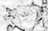
![[IM Output]](rose_charcoal_3.gif) 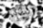
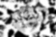
For a better example of using a charcoal transformation on a real image see
Charcoal Sketch of a Photo.
|
Technically the "-charcoal" operator is a "-edge" operator with some
thresholding applied to a grey-scale conversion of the original image.
|
Pencil Sketch Transform
The "
-sketch" operator
basically applies a pattern of line strokes to an image to generate what looks
like an artistic pencil sketch. Arguments control the length and angle of the
strokes.
However it is best applied to a larger image with distinct and shadings.
See
Pencil Sketch for a full example of this
operator and how it works internally.
Emboss, creating a metallic impression
The "
-emboss" operator
tries to generate the effect of an acid impression of a grey-scale image on a
sheet of metal. It is in many respects very similar to the "
-shade" operator we will look at
below, but without the 3D looking edges.
Its argument is a radius/sigma, with only the sigma being important. I not
found the argument very useful, and may in fact be buggy. The argument has
also changed in a recent version of IM. I just don't know what is going on.
Help me understand if you can.
convert rose: -emboss 0x.5 rose_emboss_0x05.gif
convert rose: -emboss 0x.9 rose_emboss_0x09.gif
convert rose: -emboss 0x1 rose_emboss_0x10.gif
convert rose: -emboss 0x1.1 rose_emboss_0x11.gif
convert rose: -emboss 0x1.2 rose_emboss_0x12.gif
convert rose: -emboss 0x2 rose_emboss_0x20.gif
|
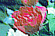
![[IM Output]](rose_emboss_0x10.gif) 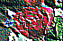
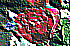
![[IM Output]](rose_emboss_0x12.gif)
![[IM Output]](rose_emboss_0x20.gif)
The operator is a grey-scale operator, meaning it will be applied to the three
color channels, separately. As such should only be applied to grey-scale
images. As you saw above, color images can produce some weird effects.
convert rose: -colorspace Gray -emboss 0x.5 rose_g_emboss_0x05.gif
convert rose: -colorspace Gray -emboss 0x.9 rose_g_emboss_0x09.gif
convert rose: -colorspace Gray -emboss 0x1 rose_g_emboss_0x10.gif
convert rose: -colorspace Gray -emboss 0x1.1 rose_g_emboss_0x11.gif
convert rose: -colorspace Gray -emboss 0x1.2 rose_g_emboss_0x12.gif
convert rose: -colorspace Gray -emboss 0x2 rose_g_emboss_0x20.gif
|
![[IM Output]](../images/rose_grey.gif) 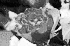
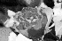
![[IM Output]](rose_g_emboss_0x09.gif)
![[IM Output]](rose_g_emboss_0x10.gif)
![[IM Output]](rose_g_emboss_0x11.gif) 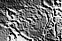
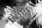
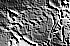
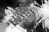
If anyone knows exactly what the emboss algorithm is supposed to do,
please let me know.
Stegano, hiding a secret image within an image
The "
-stegano" operator
is really more of a 'fun' operator. For example it could be use by a spy to
hide info in the 'chaos' of a random image.
First a warning...
Do not use JPEG, GIF, or any other 'lossy' image encoding with Stegano
For example, lets generate a cryptic message (image) that you want to send to
your fellow spy...
|
convert -gravity center -size 50x40 label:"Watch\nthe\nPidgeon" message.gif
identify message.gif
| |
|
|
|
Note that we will also need the size of the message image (36x43 pixels), thus
the identify in the above.
Next the put it into some image with some offset. The offset (and message
size) used is the cryptographic 'key' for the hidden message.
composite message.gif rose: -stegano +15+2 rose_message.png
| |
![[IM Output]](rose_message.png)
|
Now you can send that image to your compatriot, who presumably already knows the
messages size and offset.
We can the recover the message hidden in the image...
convert -size 50x40+15+2 stegano:rose_message.png message_recovered.gif
| |
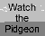
|
The larger the containing image the better the recovered image will be, so
hiding small images in larger ones is better than the example shown above.
Just to show you how the hidden message was distributed throughout the
container image, lets do a comparison of the combined image against the
original.
|
compare -metric PAE rose: rose_message.png rose_difference.png
| |
![[IM Output]](rose_difference.png)
|
|
|
Which shows how the message image was encrypted and distributed all over the
container image to hide it.
Also the '
PAE' metric returned by the above shows that the
largest difference was only a single color value out of the 8 bit color values
used for this image.
That is tiny. So tiny that a small change or modification to the image will
destroy the message hidden within. It is such a small difference, you can't
even use JPEG with its lossy compression as the image format, or any other
lossy image format (including GIF) for the container image.
Also if you had the wrong 'offset key' you will not get the message...
convert -size 50x40+14+2 stegano:rose_message.png message_bad.gif
| |
![[IM Output]](message_bad.gif)
|
You can also limit what area of the image the message is to be hidden by using
a
Region setting. The same setting will
also be needed when attempting to recover the message. This would probably
make finding and decoding the hidden message in a large image, especially if
restricted to a 'busy' area, an order of magnatitude harder to determine.
However be warned that this is not a very cryptographically secure technique.
Especially if the original source image is also available. Frequency analysis
of the image will generally let an attacker know there is a hidden message.
As a method of image copyright protection, the
Stegano
Operator is also useless, as the smallest change to the image will destroy
the message, and thus its effectiveness.
As a spy tool it is also not very good, with such a small number of
'combinations' for a reasonable sized image. Anyone who knows roughly what you
are doing could probably crack it quickly. Better to stick to well known and
time tested cryptographic methods.
It's only real practical use is as a fun tool, or as a way to add very small
amounts of noise to an existing image.
Encrypting Image Data
The operators "
-encipher" and "
-decipher" will basically encrypt image data into a garbled mess.
That is the image content itself is no longer recognisable at all until the
image is later decrypted. This can be used for example to protect sensitive
images on public services, so that only others with the secret pass-phrase can
later view it.
But first a warning...
Do not use JPEG, GIF, or any other 'lossy' image encoding with Encryption
For example lets encrypt that secret message image we created above, using
a pass-phrase I have saved in a, not quite so 'secret', file "
pass_phrase.txt".
convert message.gif -encipher pass_phrase.txt \
-depth 8 png24:message_hidden.png
|
![[IM Output]](message_hidden.png)
|
The encrypted image assumes it is saved using a 8 bit image file format. As
such it is recommended to enforce that limitation by setting "-depth 8" before the final save
to the output file.
The "png24" was also needed in the above to ensure that the
output is not a palette or colormapped "png8:" image, which also does not
work properly.
|
As you can see the resulting image looks like complete garbage, with no
indication of the images real content.
Now you can publish that image on the web, and only someone who knows the
exact original pass-phrase can restore the image data...
convert message_hidden.png -decipher pass_phrase.txt message_restored.gif
| |
![[IM Output]](message_restored.gif)
|
However be warned that if the image data is corrupted in some way, you will
not be able to restore it. That includes if the PNG saved using a gray-scale
image format type. As such, only a non-lossy image format can be used, such
as PNG, MIFF, TIFF, or even
Pixel Enumeration
Text. However using a lossy image format, such as JPEG, PNG8, and GIF,
will corrupt the image data, thus destroy the resulting encryption.
Note that any meta-data that may be describing the image, will still be in the
clear. That means, you could encrypt images using the images own 'comment'
string as the pass-phrase or use that comment encrypted using some smaller
password. Its a simple idea that could make the pass-phrase more variable.
Encrypting an image can be just one step. Taking the result just that little
further can produce an image that will not simply decrypt, without some extra
processing. For example here I use some
Simple
Non-Destructive Distorts to confuse anyone trying to decrypt the image in
the normal way.
echo "password" | convert message.gif -encipher - \
-transpose -depth 8 png24:message_obfuscate.png
echo "password" | convert message_obfuscate.png -transpose \
-decipher - message_restored_2.png
|
![[IM Output]](message_obfuscate.png) 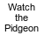
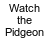
If you did not include the "
-transpose" in the decryption command above, the image will not
have deciphered correctly. Also note that due to the streaming cipher used
(see the expert note below) using just a "
-roll" of some sort will not
prevent the image from being decrypting, at least partially.
Note that in the above I did not use a file to hold the 'pass-phrase' but fed
the phrase into the "
convert" command using standard input, which
allows you use some other program or command to get the phrase from the
user, generate it, or some other method, instead of using text file with the
pass-phrase in the clear.
The pass-phrase could also be generated from other freely downloadable files
and images. For example you could decrypt your image using the signature, or
comment string of a well known, freely downloadable reference image. For
instance here I use the signature of the "
rose.gif" image to
encrypt and later decrypt the "
message.gif" image.
identify -format %# rose.gif |\
convert message.gif -encipher - -depth 8 png24:message_signed.png
identify -format %# rose.gif |\
convert message_signed.png -decipher - message_restored_3.png
|

![[IM Output]](message_signed.png)
As of IM v6.4.8-0 the file used by "
-encipher" and "
-decipher" can be a binary
file. As such you could even directly use an image itself as the the
passphrase.
convert message.gif -encipher rose.gif -depth 8 png24:message_binary.png
convert message_binary.png -decipher rose.gif message_restored_4.png
|
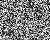
![[IM Output]](message_restored_4.png)
|
Before IM v6.4.8-0 a binary file would stop at the first 'NULL' character it
finds. Something that would happen rather early if a PNG image was used.
|
This technique is exact (unless some of the data was destroyed in
transmission). And as such you can use it to encrypt an image containing
other hidden information such as a
Stegano Image.
This means even if authorities do decrypt the image, or force you to reveal
the password, they will see actual image, but that image may not be the final
hidden one.
 |
The "-encipher" and
"-decipher"
operators was added to IM v6.3.8-6, but required you to include a
"--enable-cipher" option in the build configuration.
However by IM v6.4.6 (when did it change?) this configuration item was no
longer needed and it became a standard configuration setting. As such you
can probably use it immedaitally.
|
|
The cipher was implemented using a self-synchronizing stream cipher
implemented from a block cipher.
This means that you can still decipher even a partial download of the image,
which was destroyed by transmission error, even though some part of the
image may have been destroyed. You also do not need to downloaded the whole
image to decrypt and examine the parts that was successfully downloaded.
But you do need the pass-phase to have any chance at all of successfully
decrypting the image, as it is a very very strong encryption.
|
Pixelate an Image
Pixelating an image is basicaly used to convert an image into a set of large
colored 'pixels' that only shows a vague outline of the original image.
Both techniques involve shrinking the image (to generate fewer pixels), then
enlarging them in such a way so as to create 'pixel block' using either
a
Scaling Operator or
Sampling Operator to generate the block of
color. It is just how the image is reduced that determines exactly what color
wil be used. A single pixel sample, or a merged average color.
convert rose: -sample 25% -scale 70x46\! rose_pixelate_sampled.gif
convert rose: -scale 25% -scale 70x46\! rose_pixelate_scaled.gif
convert rose: -resize 25% -scale 70x46\! rose_pixelate_resized.gif
|
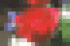
![[IM Output]](rose_pixelate_resized.gif)
As you can see, the 'sampled' areas will have much more distinct (aliased)
'pixels', while the other two uses a merged or averaged color, which tends to
produce more muted, but more accurite color representation for each 'pixel'.
See also
Protect Someones Anonymity for
an example of using this on just a smaller masked area of the image, such as
a persons face.
Grids of Pixels
Gridding an image is very similar to pixelating an image. In this case we
want only want to enlarge the image, to generate distinct pixel-level view
of an image's details. Typically a very small image.
The simplest way is like the previous example, simply
Scale a small image, to enlarge the pixels.
convert rose: -crop 10x10+12+20 +resize grid_input.png
convert grid_input.png -scale 1000% grid_scale.png
|
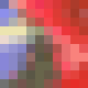
The problem with a simple scaling, is that in areas where pixels are similar
in color, you can have trouble seeing the individual 'pixel blocks'.
What we need to add a border around the pixels, to separate them.
For this we need to overlay a generated tile mask. See
Tiling with an Image already In Memory for
various methods of using a generated tiling image, in a single command.
Here we generate a white on black 'grid' which is overlayed using Screen Composition (overlay white, while
leaving black areas as-is).
convert -size 10x10 xc: -draw 'rectangle 1,1 9,9' -write mpr:block +delete \
grid_input.png -scale 1000% -size 101x101 tile:mpr:block \
+swap -compose screen -composite grid_blocks.png
| |
![[IM Output]](grid_blocks.png)
|
Note that the size used to generate the tile is
scale*image_size+gap_size (in this case
10*10+1 => 101).
I also
Swapped the two images so that the final
image size comes from the tile image, rather than from the scaled image which
is one pixel smaller in size. However this may lose any image meta-data that
was in the original image as I used the tiled image for the destination.
Here I generate circular 'spots' of color, but this time used a Multiply Composition (overlay black, while
leaving white areas as-is).
convert -size 10x10 xc: -draw 'circle 5,5 1,3' -negate \
-write mpr:spot +delete \
grid_input.png -scale 1000% -size 101x101 tile:mpr:spot \
+swap -compose multiply -composite grid_spots.png
| |
![[IM Output]](grid_spots.png)
|
You can make the grid border transparent by also negating the tiled overlay
(black areas become transparent) and use a
CopyOpacity Composition instead of
Multiply.
Other colors can also be added, but for this to work you have to use a tile
image that actually contains real transparency. For this you need to convert
the black and white tile image into a
Shaped
Mask.
For example, here I use Basic Morphology
Operator to generate a diamond shaped 'holes' in a colored overlay. For
this a single 'seed' pixel is drawn and expanded using a Diamond Morphology Kernel.
convert -size 10x10 xc: -draw 'point 5,5' -morphology Erode:4 Diamond \
-background Navy -alpha shape -write mpr:diamond +delete \
grid_input.png -scale 1000% -splice 1x1+0+0 \
-size 101x101 -background none tile:mpr:diamond \
-alpha set -compose Over -composite grid_diamonds.png
| |
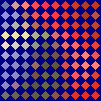
|
|
Note that the "tile:" coder will replace any transparency in
the image with the current background color. If you want to preserve the
transparency of the tiling image, either set "-background none"
or "-compose Src". The former is easier.
|
Note techniqually, the alpha shaping can be done either before saving the tile
image, or after tiling the tile image, before overlaying it. The choice is
yours.
One final technique is to use a bad resampling filter to produce a
Resampling Failure to generate
aliased circles of each pixel. This is not great technique (mis-using image
processing failure), but it does form a Grid of Pixels.
Spacing Out Tiles
A similar problem is spacing out a grid of tiles in an image. this is not
simply scaling up individual pixels into 'pixel blocks' but inserting space
between rectangluar areas of an image. That is
Splicing extra pixels into an image at regular intervals.
Currently the best solution is to break up the image into
Rows and Columns and
Splicing in the extra spacing onto each tile before
Appending the tiles back together.
For example...
convert rose: -background SkyBlue \
-crop 10x0 +repage -splice 3x0 +append \
-crop 0x10 +repage -splice 0x3 -append \
grid_tile.png
|
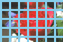
Here is another method which also separates the original image into tiles, but
then uses some
DIY FX Expressions to calculate the
new postion of a tile, from its old position.
convert rose: -crop 10x10 \
-set page '+%[fx:page.x+3*page.x/10]+%[fx:page.y+3*page.y/10]' \
-background skyblue -layers merge +repage grid_tile_fx.png
| |
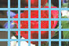
|
The number '
3' in the above is the gap width to add, and
'
10' is the tile size. All that you need is to add a border or
other edge to the result.
With a little more work you can even add some random 'jitter' to the placement
of each tile in the above grid, for a less regular effect.
The problem with both these methods is that generating lots of small images,
only to join them back together does generate a lot of work. Especially for
very small tiles sizes.
A better method that has been proposed is a special extension to the
Splice Operator, in the IM Forum Discussion
Splice (adding tile gridding
gaps).
Computer Vision Transformations
Edge Detection
The "
-edge" operator
highlights areas of color gradients within an image. It is a grey-scale
operator, so is applied to each of the three color channels separately.
convert mask.gif -edge 1 mask_edge_1.gif
convert mask.gif -edge 2 mask_edge_2.gif
convert mask.gif -edge 3 mask_edge_3.gif
convert mask.gif -edge 10 mask_edge_10.gif
|
![[IM Output]](mask.gif)
![[IM Output]](mask_edge_3.gif)
![[IM Output]](mask_edge_10.gif)
As you can see, the edge is added only to areas with a color gradient that is
more than 50% white! I don't know if this is a bug or intentional, but it
means that the edge in the above is located almost completely in the white
parts of the original mask image. This fact can be extremely important when
making use of the results of the "
-edge" operator.
For example if you are edge detecting an image containing an black outline,
the "
-edge" operator will
'twin' the black lines, producing a weird result.
convert piglet.gif -colorspace Gray -edge 1 -negate piglet_edge.gif
|
![[IM Output]](../images/piglet.gif)
![[IM Output]](piglet_edge.gif)
However by negating the image before doing the edge detecting, the twined lines
go inward and join together, removing the 'twin line' effect.
convert piglet.gif -colorspace Gray \
-negate -edge 1 -negate piglet_edge_neg.gif
| |
|
I have found that the edges tend to be too sharp, generating a non-smooth edge
to the resulting images. As such I find a very very slight blur to the result
improves the look quite a bit.
convert piglet_edge_neg.gif -blur 0x.5 piglet_edge_blur.gif
| |
![[IM Output]](piglet_edge_blur.gif)
|
Here I have applied edge detection to a color image, and a grey-scale version
to show you its effects on photo-like images.
convert rose: -edge 1 rose_edge.gif
convert rose: -colorspace Gray -edge 1 rose_edge_grey.gif
|
![[IM Output]](rose_edge.gif) 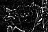
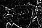
As you can see without converting the image to grey-scale the edges for the
different color channels are generated completely independent of each other.
Canny Edge Detector
As on IM v6.8.9-0, IM now supports the canny edge detector. (See
Announcment Examples on the IM
Forum). This is a very advanced edge detection algorithm, that produces a very
strong (binary) single pixel wide lines at all sharp edges, with very little
noise interferance.
For example, here we apply it to the test images we used above..
convert mask.gif -canny 0x1+10%+30% mask_canny.gif
convert piglet.gif -canny 0x1+10%+30% piglet_canny.gif
convert piglet.gif -negate -canny 0x1+10%+30% piglet_canny_neg.gif
convert rose: -canny 0x1+10%+30% rose_canny.gif
|
![[IM Output]](mask_canny.gif)
![[IM Output]](piglet_canny.gif)
![[IM Output]](rose_canny.gif)
As you can see it produces a much sharper result than the
Edge Operator above. The fuzzy anti-aliased edge has little to no
effect, on the result producing thin bitmap lines.
Also as the piglet image shows it is not placed on one specific side as the
previous edge operator did. As a result, negating the input image has no
effect. But like all edge detectors it can have problems with real world
images with 'busy' backgrounds, such as the built-in rose image.
This clean result is very important later in
Hough Line
Detection.
Edge Outlines from Anti-Aliased Shapes
The biggest problem with normal edge detection methods is that the result is
highly aliased. That is it generates a very staircase like pixel effects,
regardless of if the shape is smooth (anti-aliased) or aliased.
For example here is a smooth anti-aliased voice balloon ("WebDings" font
character '
(' ).
convert -size 80x80 -gravity center -font WebDings label:')' voice.gif
| |
![[IM Output]](voice.gif)
|
And here is its edge detected image...
convert voice.gif -edge 1 -negate voice_edge.gif
| |
![[IM Output]](voice_edge.gif)
|
As you can see it looks horrible, with some minor anti-aliasing on the outside
of the edge, and a total aliased (staircase) look on the inside of the line.
The negating the image generated a similar outline around the outside of the
image, but also has strong aliasing outside of the line.
convert voice.gif -negate -edge 1 -negate voice_edge_negate.gif
| |
|
An alternative when you already have an image with an anti-aliased edge,
is to generate the difference image of a 'jittered' clone of the original
shape. For example here we find the difference image between the original,
image and one that has been offset (or jittered) to the right by 1 pixel.
convert voice.gif \( +clone -roll +1+0 \) -compose difference -composite \
-negate voice_jitter_horiz.gif
| |
![[IM Output]](voice_jitter_horiz.gif)
|
Note that the this does not produce a good edge for horizontal sloped edges.
However by combining both a horizontal and a vertical jittered difference
image, we can get a very good anti-aliased outline of the shape.
convert voice.gif \
\( -clone 0 -roll +1+0 -clone 0 -compose difference -composite \) \
\( -clone 0 -roll +0+1 -clone 0 -compose difference -composite \) \
-delete 0 -compose screen -composite -negate voice_jitter_edge.gif
| |
|
This technique also has the advantage of working regardless of if the mask is
negated or not.
Note however that the result has a 1/2 pixel offset relative to the original
image, so it may require some further 'distortion' processing to re-align
either the original shape, or the outline if the two needs to be combined
to get the result you want.
Edge Outlines from Bitmap Shapes
Bitmap images are much harder, as they don't have any anti-aliased pixels
that can be used to produce a smooth outline.
For example here is a fancy 'Heart' shape that was extracted from the
"WebDings" font (character '
Y'). However I purposefully
generated it as an aliased bitmap, to simulate a horrible bitmap image
downloaded from the network. Such as the outline of a GIF image containing
transparency.
convert +antialias -size 80x80 -gravity center \
-font WebDings label:Y heart.gif
| |
![[IM Output]](heart.gif)
|
So we have this horrible image, but we want to find the images outline rather
than its shape. Direct use of edge detection will only generate a pure bitmap
edge around the outside of the bitmap shape.
convert heart.gif -edge 1 -negate heart_edge.gif
| |
![[IM Output]](heart_edge.gif)
|
A negated edge generates an edge image but for the inside of the black area.
convert heart.gif -negate -edge 1 -negate heart_edge_negate.gif
| |
![[IM Output]](heart_edge_negate.gif)
|
By adding both of the above you get a 2 pixel edge centered on the bitmap
shapes edge.
convert heart.gif \( +clone -negate \) -edge 1 \
-compose add -composite -negate heart_edge_double.gif
| |
|
As you can see the resulting image is highly aliased with 'staircase' like
effects in the outline, even though the original image is itself not too bad
in this regard. This is not a good solution.
A slightly better edge can be created by using an '
EdgeIn' morphology method, or others
like it.
convert heart.gif -negate -morphology EdgeIn Diamond -negate heart_edgein.gif
| |
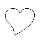
|
And a similar effect can be achieved by just using resizes to blur the edge in
the right way, before using a
Solarize
to extract the mid-gray pixels that form the edge. A thicker edge can be
generated by adding a "
-filter Cubic" setting, or some other
Resampling Filters.
convert heart.gif -resize 400% -resize 25% \
-solarize 50% -evaluate multiply 2 -negate heart_resize.gif
| |
![[IM Output]](heart_resize.gif)
|
Or for more controlled fuzzier effect you can just blur the shape and extract
the edge in a similar way. I find a blur of '
0.7' about the
best, with a 3 pixel limit to speed things up.
convert heart.gif -blur 3x.7 -solarize 50% -level 50%,0 heart_blur.gif
| |
|
Note the use of
Level Operator, which is
the equivalent of the "
-evaluate multiply 2 -negate" used in the
previous example.
With an anti-aliased border you can now re-add the original shape if you just
want to smooth the original shape rather than get its outline. Just remember
that the outline is positioned exactly along the edge of the original image, so
will be half a pixel larger in size that the previous examples.
Do you know of any other ways of generating an anti-aliased outline from a
shape (anti-aliased, or bitmap). If so please mail it to me, or the IM forum.
You will be credited.
Edging using a Raster to Vector Converter
One of the most ideal solutions is to use a non-IM '
raster to vector'
conversion program to convert this bitmap shape into a vector outline.
Programs that can do this include: "
ScanFont",
"
CorelTrace", "
Streamline" by Abobe, and "
Vector Magic". Most of these
however cost you at least some money. "VectorMagick" and another tracing
program "
AutoTracer" have free to
use online image converters available. Other free solutions are "
AutoTrace", or "
PoTrace". More suggestions
are welcome.
These trace programs are simple to use, but typically requires some form of
pre and post image setup. They have a limited number of input formats, and
outputs a vector image which will create a 'smoothed' form of the input image.
I prefer the "
AutoTrace" as it does not scale the resulting SVG
data, and thus producing a standard line thickness, however you can not use it
in a 'pipeline'.
For best results it is a good idea to ensure we only feed it a basic bitmap
image, which we can ensure by thresholding the input image, while we convert
it to an image format autotrace understands. I can then convert that image
into a SVG vector image.
convert heart.gif -colorspace gray -threshold 50% heart_tmp.pbm
autotrace -output-format svg -output-file heart.svg heart_tmp.pbm
convert heart.svg heart_svg.gif
rm -f heart_tmp.pbm
|
As of IM v6.4.2-6 you can do the above sequence directly using the
"
autotrace:" image input delegate. This only requires the
"
autotrace" command to be installed. For example
convert autotrace:heart.gif heart_traced.gif
| |
![[IM Output]](heart_traced.gif)
|
If your IM was built with the "
AutoTrace" delegate
library, you can also have IM directly generate the SVG image from an image in
memory. For details of this see
SVG Output
Handling. For example....
convert heart.gif heart_2.svg
|
Now the SVG output will of course represent a smoothed version of the original
image, which is not what we actually want in this example. But as we now have
the shape of the bitmap in
vector form, we can simply adjust the SVG
'
style' attributes so as to '
stroke' the outline,
rather than '
fill' the shape. The modified SVG can then be fed
back into ImageMagick again to recreate the clean outline raster image.
For example...
cat heart.svg |
sed 's/"fill:#000000[^"]*"/"fill:none; stroke:black;"/' |
convert svg:- heart_outline.gif
| |
|
Yes it is a little awkward, but the smooth anti-aliased result is well worth
the effort. It would be nice if outline or some other modifications could be
specified as options to the "
autotrace" command itself, but that
is currently not a feature.
You can also further modify the SVG output to thickening the edge, or specify
some other stroke or background color, change the fill color of the vector
edge shape. For example here we generate a thicker outline of the shape with
a red fill, all nicly anti-aliased.
cat heart.svg |
sed 's/"fill:#000000;[^"]*"/"fill:red; stroke:black; stroke-width:5;"/' |
convert svg:- heart_outline_thick.gif
| |
![[IM Output]](heart_outline_thick.gif)
|
Such a perfect looking heart could not have been generated from a bitmap shape
in any other way.
We could also just extract the '
d="..."' path element to use
directly as a
SVG Path String in the
Draw Command. This would then allow you to use any
of the other IM draw settings with that vector outline, giving you complete
control of the final result.
For another example of using the "
AutoTrace" program, see
Skeleton using Autotrace.
Hough Line Detector
The Hough Line Detector ("
-hough-lines" added IM v6.8.9-1), is a very complex transform with
a lot of stages (for details see
Wikipedia, Hough
Transform). Basically it is designed to examine an image, looking for
white lines on a black background, and try to return the exact location of any
line segments (linear sequences pixels) present in the image. This can be
very important for things like removing image rotations, or determining the
perspective transformation in an image, so it can be repeated, or removed.
Here is the full set of options to the operator
-background {background} -stroke {line_color} -hough-lines {W}x{H}+{threshold}
|
The colors (
background and
line_color) is used to set the colors
of lines in the resulting image (if you actually draw them). The
argument to the Hough Operator (
W}x{
H}+{
threshold) is
used to define the size and treshold of the filter used to find 'peaks' in the
intermedite 'search image'. that is is controls how well it actuall 'finds'
the lines we are trying to detect (see below). You would adjust these help
find the line detection.
For example lets try to find the lines in a rectangular shaped image.
First we need to reduce the image to lines, and for a clean result the
Canny Edge Detector is recommened.
convert shape_rectangle.gif -canny 0x1+10%+30% rectangle.gif
|
![[IM Output]](../images/shape_rectangle.gif) 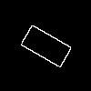
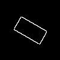
Now lets apply the Hough Line Detector to this image.
convert rectangle.gif -background black -stroke red \
-hough-lines 5x5+20 rectangle_lines.gif
| |
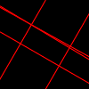
|
As you can see 5 lines were found, 2 of which are very close together. The
reason for the extra line is that the rectangle in the image is not perfect.
Now while I am displaying an raster (GIF) image result, the Hough Operator
actually generates a vector image in
Magick Vector
Graphics Format. This means you can list the line information for further
processing.
convert rectangle.gif -background black -stroke red \
-hough-lines 5x5+20 rectangle_lines.mvg
|
Note that the lines are drawn from one edge (with floating point values) to
another edge of the image. And from this you can see that the second and third
lines are the two that are close.
The comment in the MVG output gives you the accumulated number of pixels that
the line 'hits' in the image, and thus is a good indication of how strong
the line is in the image. This value will always be larger than the treshold
value you give to the "
-hough-line" operator. From this you can see the first and last
lines (which are close matches) are both roughly equal in strength, so it
would be hard to pick one of them over another.
If this happens to you, I suggest you try to improve your edge detection step.
Note that MVG image does not have any colors defined. The color settings in
this example were not actually used. The colors are only used if you actually
'draw' the vectors when converting the above result into a 'raster' image, as
we did before.
You can also see the intermedate 'search image', or 'accumulator' that is
looking for white pixels in every orientation, by using a special define.
convert rectangle.gif \
-define hough-lines:accumulator=true -hough-lines 5x5+20 \
-delete 0 -contrast-stretch 0.1% rectangle_accumulator.gif
| |
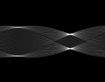
|
The define will just append the 'search image' to the image result, which in
this case we delete. We also applied some contast to the 'accumulated values'
to make them more visible. This is the image that the arguments to the Hough
Detector is searching.
The image is always 180 pixels wide (1 pixel per degree of line angle), while
the height is twice the diagonal length of the image. As such the location of
the peak will directly define the angle of the line, and the perpendicular
distance of the line relative to the center point of the input image. That is
the X coordinate is the angle in degrees, and the Y coordinate the distance
from center from -diagonal distance, to +diagonal distance.
If you look closely at the lower-right peak you can see why we ended up with
two lines instead of one. The peak here is 'twined' with a slight gap between
them.
The algorithm is based on the script "
houghlines" by Fred Wienhaus, though with a different
'perpendicular distance' accumulation handling.
Local Adaptive Thresholding
Under Construction
The "
-lat" operator, tries
to adaptively threshold each pixel based on the value of pixels in a
surrounding window. This is commonly used to threshold images with an uneven
background (i.e., uneven illumination). It is based on the assumption that
pixels in a small window will have roughly the same background color and
roughly the same foreground color.
For example.
convert input.png -lat 17 output.png
In the above a 17 pixel square 'window' is used to determine the average color
of the image at each point, if the pixel is darker than this average it is
made black, if lighter than this average it is made white.
A small window size will make the threshold more sensitive to small changes in
illuminations, is faster to compute but is adversely affected by noise in the
image.
Example
A larger window size will make the threshold less sensitive to small
changes in illumination, is slower to compute and less affected by noise in the
image. This has the effect of making the threshold value selection more or
less sensitive to small changes in pixel values.
Example
The window does not need to be square. for example...
convert input.png -lat 15x25 output.png
You can also provide an offset which will be added to the calculated average
color, making the local threshold value for each pixel either lighter or
darker. This can be used for example to reduce the effect of noise or the
effect of small changes in pixel values.
convert input.png -lat 15x25+2%
These small changes normally occur when a scanner or digital camera is used to
acquire the image. Use a positive offset value to make the adaptive
thresholding less sensitive to small variations in pixel values. Use a
negative threshold to make the adaptive threshold more sensitive to small
variations in pixel values.
Alternatively, one could reduce the noise in the image before processing it
with "-lat".
In summary, each pixel is thresholded using the following logic:
AVG = average value of each pixel in the window
IF (input pixel is > AVG + OFFSET)
Output pixel is BLACK
else
Output pixel is WHITE
---
An alternative is to subtract a blurred copy of the original image
using (Modulus) Subtraction, then thresholding.
convert rose: -colorspace gray -lat 10x10+0% x:
is roughly equivalent to...
convert rose: -colorspace gray \( +clone -blur 10x65535 \) \
-compose subtract -composite -threshold 50% x:
The special "-blur 10x65535" is a linear averaging blur limiting itself to a
10x10 window.
The 'Subtract' composition being a mathematical modulus type of operation will
wrap the values that goes negative back round to a value greater than 50%.
If you want to include an offset you can do so by also subtracting a solid
color background image by using a -flatten... for example
convert rose: -colorspace gray -lat 10x10+10% x:
is roughly equivalent to...
convert rose: -colorspace gray \( +clone -blur 10x65535 \) \
-compose subtract -background gray10 -flatten -threshold 50% x:
The above was modified from initial notes provided by D Hobson
<dhobson@yahoo.com>
-adaptive-sharpen
Sharpen images only around the edges of the images
-segment cluster-threshold x smoothing-threshold
Segmentation of the color space (not image objects)
This can produce very verbose output.
This applies the "fuzzy c-means algorithm" if you want to know more.
Also related is -despeckle. to remove single off color pixels.
Generate a 3d stereogram of two images (one for each eye)
This is also known as an anaglyph
composite left.jpg right.jpg -stereo anaglyph.jpg
Shade 3D Highlighting
Shade Usage
The "
-shade" operator
I have always thought one of the most interesting operators provided by
ImageMagick. The documentation of this operator only gave a rough hint as to
its capabilities. It too me a lot of personal research to make sense of the
operator, and even figure out how best to use the power that it can provide
IM users.
Basically what this operator does is assume that the given image is something
called a 'height field'. That is a grey-scale image representing the surface
of some object, or terrain. The color '
white' represents the
highest point in an image, while '
black' the lowest point.
This representation come out of the 1980 computer vision research, where a
photo with a strong 'camera light' was used, making near points bright, and
points far away dark.
|
As a grey-scale image is needed by "-shade", the operator will
automatically remove any color from the input image. Similarly any
transparency that may be present in the image is completely useless and
ignored by the operator.
|
Now "
-shade" takes this
grey-scale height field and shines a light down onto it. The result is
a representation of light shades that would thus be produced.
Remember you must think of the input image as a 'surface' for the output to
make any sense.
For our demonstrations we will need a 'height field' image so lets draw one.
convert -font Candice -pointsize 64 -background black -fill white \
label:A -trim +repage -bordercolor black -border 10x5 \
shade_a_mask.gif
| |
![[IM Output]](shade_a_mask.gif)
|
This image is also equivalent of a 'mask' of an shape, is often not only used
as input to "
-shade", but
also for
Masking Images to cut out the same
shape from the shaded results. See
Masking a Shade
Image below.
To the "
-shade" operator
this image will look like a flat black plain, with a flat white plateau rising
vertically upward. Only the edges of this image will thus produce interesting
effects.
To this effect the two arguments defines the direction from which the light is
shining.
The first argument is the
direction from which the light comes. As
such a '
0' degree angle will be from the east (of left),
'
90' is anti-clockwise from the north (or top), and so on. For
example...
convert shade_a_mask.gif -shade 0x45 shade_direction_0.gif
convert shade_a_mask.gif -shade 45x45 shade_direction_45.gif
convert shade_a_mask.gif -shade 90x45 shade_direction_90.gif
convert shade_a_mask.gif -shade 135x45 shade_direction_135.gif
convert shade_a_mask.gif -shade 180x45 shade_direction_180.gif
|
![[IM Output]](shade_direction_0.gif)
![[IM Output]](shade_direction_45.gif)
![[IM Output]](shade_direction_90.gif) You get the idea. The light can come from any direction.
The other argument is the elevation, and represents angle the light
source makes with the ground. You can think of it as how high the sun is
during the day, so that '0' is dawn, and '90' is directly overhead.
You get the idea. The light can come from any direction.
The other argument is the elevation, and represents angle the light
source makes with the ground. You can think of it as how high the sun is
during the day, so that '0' is dawn, and '90' is directly overhead.
![[diagram]](../img_diagrams/shade_elevation.gif)
convert shade_a_mask.gif -shade 90x0 shade_elevation_0.gif
convert shade_a_mask.gif -shade 90x15 shade_elevation_15.gif
convert shade_a_mask.gif -shade 90x30 shade_elevation_30.gif
convert shade_a_mask.gif -shade 90x45 shade_elevation_45.gif
convert shade_a_mask.gif -shade 90x60 shade_elevation_60.gif
convert shade_a_mask.gif -shade 90x75 shade_elevation_75.gif
convert shade_a_mask.gif -shade 90x90 shade_elevation_90.gif
|
![[IM Output]](shade_elevation_0.gif)
![[IM Output]](shade_elevation_15.gif)
![[IM Output]](shade_elevation_45.gif)
![[IM Output]](shade_elevation_60.gif)
![[IM Output]](shade_elevation_90.gif) As you can see with an elevation of '
As you can see with an elevation of '0' the shape is only
highlighted on the side from which the light is coming. Everything else is
black, as no light shines on any other surface. I call this a 'Dawn Highlight'
and has its own special uses.
This brings us to the first item of note. An image that is "-shade" will often have more dark,
or shadowed areas, than highlighted areas. The shading is not equal.
As the light gets higher over the 'height field' image. The overall brightness
of the image will become whiter, until at 'high-noon' or an elevation of
'90' any flat areas are brilliantly white, and only slopes and
edges are shaded to a grey color, with a mid grey as a maximum, or
'cliff-like' slope change.
This 'noon' image is another special case that is a bit like an edge detection
system, though it is between 2 and 4 pixels wide for sharp edges. I have used
this image in the past for generating a mask for the the beveled edge of
"-shade" images, so as to
make flat areas transparent.
If the elevation angle goes beyond '90' degrees, you will
get the same result as if the light was from the other direction. As such the
argument '0x135' will produce exactly the same result as
'180x45'. A negative elevation angle will also produce the
same results, as if the light is coming up from below, onto a 'translucent'
like surface. As such '0x-45' will be the same as
'0x45'. In other words for a particular shade there are usually
4 other arguments that will also produce the same result.
From the above I would consider an argument of '120x45' to be
about the best for direct use of the shade output. For example here it
creates some beveled text...
convert -size 320x100 xc:black \
-font Candice -pointsize 72 -fill white \
-draw "text 25,65 'Anthony'" \
-shade 120x45 shade_anthony.jpg
|
![[IM Output]](shade_anthony.jpg)
One of the major problems with "-shade" is the thickness of the bevel that is actually produced.
A sharp edge such as I used above will always produce a bevel of about 4
pixels wide, both into and out of the masked area. There is no way to adjust
this thickness, short of resizing images before and after using the "-shade" operator..
If you would like to find out just how bright 'flat areas' will be from a
specific elevation lighting angle, then you can use the following
command, to shade a flat solid color surface.
convert -size 50x50 xc:white -draw 'circle 25,25 20,10' \
-blur 0x2 -shade 0x45 -gravity center -crop 1x1+0+0 txt:-
|
![[IM Text]](shade_elevation_45.txt.gif)
As you can see a elevation of '45' degrees produces a quite
bright flat color of about 70% grey, which is a reasonable grey level for
general viewing. However if you plan to use shade for generating 3-D
highlights of various shapes, then the actual grey level becomes very
important. This will be looking at later in Creating Overlay Highlights.
That is basically it, for the "-shade" operator. However using it effectively presents a whole
range of techniques and possibilities, which we will look at next.
Masking Shaded Shapes
As mentioned above, a simple 'mask' shape is often used with "-shade" to generate complex 3-D
effects from a simple shape. For example lets do this to a directly shaded
mask image.
convert shade_direction_135.gif shade_a_mask.gif \
-alpha Off -compose CopyOpacity -composite shade_beveled.png
|
![[IM Output]](shade_beveled.png)
Notice that about half the bevel generated by the "-shade" operator, actually falls
outside the masked area. In other words, a straight bevel is halved when
masked.
On the other hand the vertical or 'midday' shade image (using
'90' degree elevation angle) can be used to just extract
the beveled edge, leaving the center of the image hollow.
convert shade_direction_135.gif \
\( shade_elevation_90.gif -normalize -negate \) \
-alpha Off -compose CopyOpacity -composite shade_beveled_edge.png
|
Note however that the 'midday' shade image, while providing a way to mask the
location (and intensity) of the effects of the "-shade" operator does not actually
cover those effects completely.
By combining the 'midday' shade image with the original mask you can increase
the size of that mask slightly to produce a better masked beveled image.
convert shade_direction_135.gif \
\( shade_elevation_90.gif -normalize -negate \
shade_a_mask.gif -compose screen -composite \) \
-alpha Off -compose CopyOpacity -composite shade_beveled_plus.png
| |
|
Remember with IM v6 you can generate the 'shade' image I generated previously
all in the same command. As such the above could have been completely
generated from scratch. For example.
convert -font Candice -pointsize 72 -background black -fill white \
label:X -trim +repage -bordercolor black -border 10x5 \
\( -clone 0 -shade 135x45 \) \
\( -clone 0 -shade 0x90 -normalize -negate \
-clone 0 -compose screen -composite \) \
-delete 0 -alpha Off -compose CopyOpacity -composite \
shade_beveled_X.png
| |
|
Shaded Shape Images
The Alpha Extract Operator will not
only extract the alpha channel from a shaped images as a gray scale mask, but
also has the side effect of preserving the shape in the 'turned-off' alpha
channel. As it is 'turned off' it will not be touched by many image processing
operators, including "-shade", preserving its detail.
What this means is that for shaped images, you can extract the shape, do the
work, then simply recover the transparency AFTER you have finished all the
image processing, simply by turning the Alpha
On again!
For example here I draw a 'Heart' on a transparent background, do some blurring
and shading of the image, then restore the original shaped outline of the
image.
convert -size 100x100 -gravity center -background None \
-font WebDings label:Y \
-alpha Extract -blur 0x6 -shade 120x21 -alpha On \
-normalize +level 15% -fill Red -tint 100% shade_heart.png
| |
|
All I can say is WOW, what a time saver! A lot simplier than the previous
command with all its extra processing and image cloning.
Rounding Shade Edges
As you saw in the last example, by blurring the image shape mask, the 'slope'
of edge 'cliffs' will be smoothed out, as if worn down by time. This produces
a nice rounded effect to the shade image.
convert -size 50x50 xc:black -fill white -draw 'circle 25,25 20,10' \
shade_circle_mask.gif
convert shade_circle_mask.gif -shade 120x45 shade_blur_0.gif
convert shade_circle_mask.gif -blur 0x1 -shade 120x45 shade_blur_1.gif
convert shade_circle_mask.gif -blur 0x2 -shade 120x45 shade_blur_2.gif
convert shade_circle_mask.gif -blur 0x3 -shade 120x45 shade_blur_3.gif
convert shade_circle_mask.gif -blur 0x4 -shade 120x45 shade_blur_4.gif
convert shade_circle_mask.gif -blur 0x5 -shade 120x45 shade_blur_5.gif
|
![[IM Output]](shade_circle_mask.gif)
![[IM Output]](shade_blur_1.gif)
![[IM Output]](shade_blur_3.gif)
![[IM Output]](shade_blur_4.gif)
![[IM Output]](shade_blur_5.gif) As you can see blurring not only rounds-off the edges, but makes the lighting
effects dimmer. You can maximize the contrast of the result by normalizing
the it, so as to bring the brightest and darkest points back to pure white and
black colors respectively.
As you can see blurring not only rounds-off the edges, but makes the lighting
effects dimmer. You can maximize the contrast of the result by normalizing
the it, so as to bring the brightest and darkest points back to pure white and
black colors respectively.
convert shade_blur_3.gif -normalize shade_blur_3n.gif
|
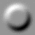
The only draw back with this is that this also generally darkens the shaded
image. This is something which we'll need to take into account in Creating Overlay Highlights.
Lets finish off this shade image by directly masking it as well..
convert shade_blur_3n.gif shade_circle_mask.gif \
-alpha Off -compose CopyOpacity -composite shade_blur_3n_mask.png
|
![[IM Output]](shade_blur_3n_mask.png)
As you can see blurring the mask image will round off the edges of the
resulting shape very nicely.
Creating Overlay Highlighting
The output from the "-shade" operator is very nice, but it is rare that you actually
want a plain grey scale image of your shape. What is needs is some color.
This however is not so easy as the two major ways of adding color, Color Tinting Mid-Tones to just recolor a
grey-scale, or 'Overlay' alpha composition,
to replace the grey areas with an image, both rely on a special form of
grey-scale image. That is a perfect mid-tone grey ('grey50') is
replaced by the color or image, while whiter or darker greys, whiten and
darken the color or image as appropriate.
These special grey-scale 'overlay highlight' images with perfect mid-tone
greys for un-modified areas is not so straight forward to create using
"-shade". However the
following are some of the more simpler ways I have discovered.
Using a 30 degree elevation lighting angle with "-shade", is one way of producing a
perfect mid-tone grey for flat areas of the shape being shaded.
For example here I shade an image, then extract the top-left pixel to check
the resulting color of a 'flat' part of the image.
|
convert -size 50x50 xc:black -fill white -draw 'circle 25,25 20,10' \
-blur 0x2 -shade 120x30 shade_30.png
convert shade_30.png -gravity center -crop 1x1+0+0 txt:-
| |
![[IM Image]](shade_30.png)
| |
|
Unfortunately changing the rounding effect of the "-blur" in the above command tends
to also vary the result highlight intensity of the shade image. That is using
a large blur not only produces a well rounded looking edge, but also made the
highlight so dim as to be near invisible.
This means that you need to add lots more contrast to the output of the
"-shade" image produced,
to make the highlight effective as an overlay image. To fix this we need a way
remove this contrast effect from the rounding adjustment. The typical way to
do this is to just "-normalize" the image, but doing this to 30 degree shade image,
results in the 'flat' areas will no longer being a perfect grey. For
example...
|
convert -size 50x50 xc:black -fill white -draw 'circle 25,25 20,10' \
-blur 0x2 -shade 120x30 -normalize shade_30_norm.png
convert shade_30_norm.png -gravity center -crop 1x1+0+0 txt:-
| |
| |
|
After some further experimentation however I found that using a 21.78 degree
shade elevation angle, will after being normalized, produce the desired perfect
mid-tone grey level as well as a good strong highlighting effect.
|
convert -size 50x50 xc:black -fill white -draw 'circle 25,25 20,10' \
-blur 0x2 -shade 120x21.78 -normalize shade_21_norm.png
convert shade_21_norm.png -gravity center -crop 1x1+0+0 txt:-
| |
| |
|
As the shade image is now run though the "-normalize" operator, the
"-blur" value used for
'rounding edges' will no longer effect final intensity of the result. A much
better method.
In summery, normalizing a shade
image will shift the mid-tones away from a perfect-grey color.
Now we can adjust the output intensity of the highlights produces output
completely independent to the other adjustments. Typically as the
normalized result is extreme, we will need a controlled de-normalization,
or anti-contrast control, to reduce the highlight to the desired level.
The simplest method for adjusting the resulting highlight, is to color tint the image with a perfect grey.
This will shift all the color levels in the image toward the central pure
mid-tone grey color.
For example...
convert -size 50x50 xc:black -fill white -draw 'circle 25,25 20,10' \
\( +clone -blur 0x2 -shade 120x21.78 -normalize \) \
+swap -alpha Off -compose CopyOpacity -composite shade_tint_0.png
convert shade_tint_0.png -fill grey50 -colorize 10% shade_tint_10.png
convert shade_tint_0.png -fill grey50 -colorize 30% shade_tint_30.png
convert shade_tint_0.png -fill grey50 -colorize 50% shade_tint_50.png
convert shade_tint_0.png -fill grey50 -colorize 80% shade_tint_80.png
|
![[IM Output]](shade_tint_10.png)
![[IM Output]](shade_tint_30.png)
![[IM Output]](shade_tint_50.png) An alternative to just linearly tinting the highlight, is to reduce its
general effect while preserving the extreme bright/dark spots of the highlight
by using Sigmoidal Non-liner Contrast
instead. This should give a more 'natural' look to the highlight effect, and
can make the highlight brighter, as if the surface was more reflective.
However to make this technique more effective, we need make sure we do not
have pure white and black colors in the shade result. This can be achieved by
first using a "
An alternative to just linearly tinting the highlight, is to reduce its
general effect while preserving the extreme bright/dark spots of the highlight
by using Sigmoidal Non-liner Contrast
instead. This should give a more 'natural' look to the highlight effect, and
can make the highlight brighter, as if the surface was more reflective.
However to make this technique more effective, we need make sure we do not
have pure white and black colors in the shade result. This can be achieved by
first using a "-contrast-stretch" of '0%' rather than "-normalize", and also
de-normalizing that result by a small amount, as we did above.
This may seem to be just adding complexity to the generation of the
highlight overlay image, but emphasizing the bright spots in the highlight
makes the extra processing worth the effort.
For example...
convert -size 50x50 xc:black -fill white -draw 'circle 25,25 20,10' \
\( +clone -blur 0x2 -shade 120x21.78 -contrast-stretch 0% \) \
+swap -alpha Off -compose CopyOpacity -composite shade_sig_0.png
convert shade_sig_0.png -sigmoidal-contrast 10x50% shade_sig-10.png
convert shade_sig_0.png -sigmoidal-contrast 5x50% shade_sig-5.png
convert shade_sig_0.png -sigmoidal-contrast 2x50% shade_sig-2.png
convert shade_sig_0.png +sigmoidal-contrast 2x50% shade_sig+2.png
convert shade_sig_0.png +sigmoidal-contrast 5x50% shade_sig+5.png
convert shade_sig_0.png +sigmoidal-contrast 10x50% shade_sig+10.png
|
![[IM Output]](shade_sig-10.png)
![[IM Output]](shade_sig-5.png)
![[IM Output]](shade_sig-2.png)

![[IM Output]](shade_sig+10.png) As you can see that the overall highlighting is reduced in intensity, but the
bright spot from reflected light remains as bright as ever, just reduced in
size. The result is a much more natural 'shiny' look to the shape.
The only drawback with this technique is that a shadow 'spot' is also
generated though this is often not as noticeable.
Finally we can combine the a 'highlight spot' with a general highlight
reduction to produce a highly configurable set of highlight overlay generator
controls...
As you can see that the overall highlighting is reduced in intensity, but the
bright spot from reflected light remains as bright as ever, just reduced in
size. The result is a much more natural 'shiny' look to the shape.
The only drawback with this technique is that a shadow 'spot' is also
generated though this is often not as noticeable.
Finally we can combine the a 'highlight spot' with a general highlight
reduction to produce a highly configurable set of highlight overlay generator
controls...
convert -size 50x50 xc:black -fill white -draw 'circle 25,25 20,10' \
\( +clone -blur 0x4 -shade 120x21.78 -contrast-stretch 0% \
+sigmoidal-contrast 7x50% -fill grey50 -colorize 10% \) \
+swap -alpha Off -compose CopyOpacity -composite shade_overlay.png
| |
![[IM Output]](shade_overlay.png)
|
- In summary, the above example has four separate controls...
- "
blur" :
Rounding the shape edges (0.001=beveled 2=smoothed 10=rounded)
- "
shade" :
The direction the light is coming from (120=top-left 60=top-right)
- "
sigmoidal" :
surface reflective control highlight spots (1=flat 5=good 10=reflective )
- "
colorize" :
Overall contrast of the highlight ( 0%=bright 10%=good 50%=dim )
Note while the above examples have been shaped to the original 'circle' shape,
the transparency should only be restored AFTER 'Overlay' compositing has been applied, not before.
Also if you plan to use a highlight repeatedly on the same shape (after any
rotation is performed), you can pre-generate the highlight overlay once for
each shape you plan to use, saving the result for multiple re-use. An example
of this re-use of shading overlay is with the generation of 3D DVD covers from
flat source images in the IM Discussion
Forums.
I also highly recommend you experiment with the above techniques, as they are
key to making your flat shaped images, much more realistic looking. If you
come up with other ideas for highlighting, please let me know.
FUTURE:
Color Tinting the Overlay image
Overlay Alpha Composition with an Image
Using a Dawn Shade Highlight
In Masking Shade Images above we showed how useful
a 'mid-day' or 'high-noon' shade image (using an elevation of
'90'), can be useful for masking and location and extent of the
effects produced by "-shade. However the horizontal or 'dawn' shade images (using an
elevation of '0')of a shape can also be quite useful as
well.
It can for example be used as a mask for either white or black images to
generate separate highlight and shading effects on shapes. This also can be
used ensure a shape gets roughly equal amounts of light and dark areas (or
even unequal amounts), as I produce them in seperatally but in a completely
controled way.
FUTURE: more detail here
See the first Advanced 3D Logo for an
example of using this technique.
Using FX, The DIY Image Operator
The new IM version 6 image list operator "-fx" is a general DIY operator that does not fit into any specific
category of IM operators, as it can be used to create just about any image
operation. Examples of its use are thought these pages, but here we will look
specifically at its capabilities and how you can use them.
The command is so generic in its abilities, that it can,
- create canvases, gradients, mathematical colormaps.
- move color values between images and channels.
- adjust image colors in just about any way imaginable
- translate, flip, mirror, rotate, scale, shear and generally distort images.
- merge or composite multiple images together.
- tile image(s) in weird and wonderful ways.
- convolve or merge neighboring pixels together.
- generate image metrics or 'fingerprints'
- compare images in unusual ways.
Of course many of these techniques are already part of IM, producing a faster
and more flexible result. But if it isn't built-in the "-fx" allows you to generate your own
version of the desired operation. In fact I and others have often used it to
prototype new operations that are later built into IM's core library.
As an example see DIY New Ordered Dither
Replacement where I used "-fx" to develop a revised version of the -ordered-dither"
operator.
The operator is essentially allows you to perform free-form mathematical
operations on one or more images. For the official summary of the command see
FX, The Special Effects
Image Operator on the ImageMagick
Web Site.
FX Basic Usage
The command takes an image sequence of as many input images you like. Typically
one or two images, and replaces ALL the input images with a copy of the first
image, which has been modified by the results of the "-fx" function. That is any meta-data
that is in the first image will be preserved in the result of the "-fx" operator.
For mathematical ease of use, all color values provided are normalized into
a 0.0 to 1.0 range of values. Results are also expected to be in this range.
This includes the transparency or alpha channel, which goes from 0.0 (meaning
fully transparent) to 1.0 (meaning fully opaque). The values represent 'alpha
transparency' and is actually the negative of how IM normally stores the
transparency internally (as matte values). It is however more mathematically
correct and easier to use in this form.
The "-channel" setting
defines what channel(s) in the first (also called the 'zeroth' or
"u") image, is replaced with the result of the "-fx" operator. This is limited, by
default, to just the color channels ('RGB') of the original image.
Any existing transparency in that image will not be modified, unless the
"-channel" setting is
changed, to include the alpha ('A') channel.
The expression is executed once for each pixel, as well an once for each color
channel in the pixel that is being processed. Also as the expression is
re-parsed each time it is executed, a complex expression could take some time
to process on a large image.
For example, here we define a black image, but then set the blue channel
to be half-bright to form a 'navy blue' color instead.
convert -size 64x64 xc:black -channel blue -fx '1/2' fx_navy.gif
| |
![[IM Output]](fx_navy.gif)
|
And here we we take a black-white gradient, and then set the blue and green
channels to zero, so it becomes a black-red gradient.
convert -size 64x64 gradient:black-white \
-channel blue,green -fx '0' fx_red.gif
| |
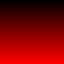
|
|
To make the "-channel" setting more like the "-fx" operator, it will
accept any combinations of the letters 'RGBA' to specify the
channels to which operators are to confine their actions.
This means that to limit the output of "-fx" to just the blue and green channels you can now say
"-channel BG" instead of the longer "-channel
blue,green".
|
We could have generated the above examples without using "-fx", but being able to do this to an
existing image is what makes this a powerful image operator.
The function can in fact read and use ANY pixel, or specific color from ANY of
the images already in the current image sequence in memory. The first 'zero'
image, is given the special name of "u". The second image
"v". Other images in memory can be referenced by an index. As
such "u[3]" is the fourth image in the current image sequence,
while "u[-1]" is the last image in the sequence. This is the
same indexing scheme used by the Image List
Operators, so you should be right at home.
If no other qualifiers are given, the color value used is same color used in
the image specified. That is unless you specifically say you want to use the
red color, it will use the color value for the color channel the command is
processing at that time. That is it will apply the expression for the blue
color value when it is processing the blue channel.
Unless told otherwise it will process each of the RGB color values (as set by
the default "-channel"
setting), for each and every pixel in the image. That is 3*w*h calculations
which modifies all the values in the image by the expression given.
For example here we take the IM built-in "rose:" image and
multiply all pixel values by 50%.
convert rose: -fx 'u*1.5' fx_rose_brighten.gif
| |
![[IM Output]](fx_rose_brighten.gif)
|
In the above example, each of the individual red, green and blue values was
multiplied by 1.5. If the resulting value is outside the 0 to 1 range it,
will be limited to the appropriate bound (1.0 in this case), unless you are
using a specially built HDRI version of ImageMagick.
Lots of other "-fx" formulas
to recolor images are explored in Mathematical Color Adjustments and Histogram Curves.
As we can also reference any image in the current image sequence, as part of
the expression for modifing the first image, we can merge two, or even more
images, in just about any way we want.
Here we generate a black-red-blue color chart image, by copying the blue
channel from a black-blue gradient (rotated), into the previous black-red
gradient we generated above.
convert -size 64x64 gradient:black-blue -rotate -90 fx_blue.gif
convert fx_red.gif fx_blue.gif \
-channel B -fx 'v' fx_combine.gif
|
![[IM Output]](fx_blue.gif) 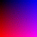
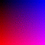
|
Of course we could have just used a Channel Coping Composition Method instead which would be a lot faster.
But that is not point.
Though the reverse is also true. Just about every IM image operation could
be replaced by a FX equivelent function.
|
Now the second image in the above is only used as a source image. What really
happens is that "-fx" first
creates a copy of just the first image. It then modifies that image according
to the formula, using all the other images given. And finally it junks all the
input images replacing them with the modified copy of the first image.
You can also calculate values based on each pixel location within the image.
values 'i,j' is the current position of the pixel being
processed, while 'w,h' gives the size of the image (the first
image unless a specific image qualifier is given).
For example here we generate a DIY
Gradient Image.
convert rose: -channel G -fx 'sin(pi*i/w)' -separate fx_sine_gradient.gif
| |
![[IM Output]](fx_sine_gradient.gif)
|
Or something more complex using both 'i,j' position values.
convert -size 80x80 xc: -channel G -fx 'sin((i-w/2)*(j-h/2)/w)/2+.5'\
-separate fx_2d_gradient.gif
| |
![[IM Output]](fx_2d_gradient.gif)
|
When generating gray-scale gradients, you can make the -fx operator work about
3 times faster, simply by asking it to only process one color channel, such as
the 'G' or green channel in the above example. This channel can
then be Separated to generate the
final gray-scale image. This can represent a very large speed boost,
especially when using a very complex "-fx" formula.
For more FX generated gradients, see examples Roll your own Gradients.
You can use the position information to lookup specific pixels from the source
image using the 'p{x,y}' syntax.
For example you can easily make your own 'mirror image' type function (like
the "-flop" image
operator), that replaces each pixel, with the color values from the 'mirror'
position of the original source.
convert rose: -fx 'p{w-i-1,j}' fx_rose_mirror.gif
| |
|
This type of 'image distortion' was made more powerful by creating Distortion Image Mapping, or other types of
Value Lookup Tables, in the form of images. Examples of doing this has been
provided in DIY Dither Patterns and
Threshold Maps, where FX is used to replace specific colors with patterns
from other images.
Now the size of the final image generated by an FX expression is the same as
the first image given, as such to generate a larger image, you will need to
set the first image to the size you want.
In this type of situation a second image (or even a third image) can be used
as a color source (hence the Swap in the next
example).
For example here we resize rose image (using Interpolated Scaling or Resize) to
generate a larger image.
convert rose: -size 120x80 xc: +swap \
-fx 'v.p{ (i+.5)*v.w/w-.5, (j+.5)*v.h/h-.5 }' \
fx_scaled.png
| |
![[IM Output]](fx_scaled.png)
|
Note how the pixel lookup is performed, it may seem complex but it is the
proper way to scale (distort) an image. Basically all the extra
'0.5' values added to the expression is needed to correctly
convert between Pixel
Coodinates used for input coordinates 'i,j' and location
lookup 'v.p{...}, while the more mathematically correct Image Coordinates is needed for
the actual mathematical calculations (scaling).
The above is actually the exact methodology used by any form of Image Distortion. You can see this FX
equivelent for most distortions by turning on the Verbose Distortion Summery. This
reports a FX equivelent for most image distortions, as a way to double check
the distortion is doing what it is expected to do.
The use of the FX DIY Operator to do image distortions,
shows just how powerful (though slow) this operator really is. If it wasn't
for this operator I doubt may of the new operations, such as distortions,
sparse-color, or ordered dithers would have been added to the ImageMagick Core
Library.
Here is something a little simplier, swapping the red and blue channels of the
rose image. See if you can figure how it works.
convert rose: \( +clone -channel R -fx B \) \
+swap -channel B -fx v.R fx_rb_swap.gif
| |
![[IM Output]](fx_rb_swap.gif)
|
As the default "-channel" setting, it limits the output of the "-fx" operator to just the three color
channels. This means that if you want to effect the alpha or transparency
channel, you must explicitly specify it, by changing the channel setting.
For example lets make a semi-transparent "rose:" image, by
setting all the alpha channel values to half.
convert rose: -alpha set -channel A -fx '0.5' fx_rose_trans.png
| |
![[IM Output]](fx_rose_trans.png)
|
Note the for the above to work properly I needed to ensure that the
"rose:" actually had an alpha channel for the "-fx" to work with. I did this with
the Alpha Channel Control Operator.
This ability of the "-fx"
operator to manipulate the RGBA channels of an image makes this operator
perfect for manipulating Channels and Masks.
As of IM 6.2.10 you can add variable assignments to "-fx" expressions, which allows you to
reduce the complexity of some expressions, that would basically be impossible
any other way.
For example, here I create a gradient based on the distance from a particular
point (assigned to the variables 'xx' and 'yy').
Without the use of the variables this formula could have become very hard to
read.
convert -size 100x100 xc: -channel G \
-fx 'xx=i-w/2; yy=j-h/2; rr=hypot(xx,yy); (.5-rr/70)*1.2+.5' \
-separate fx_radial_gradient.png
| |
|
|
Due the simple tokenization handling used by "-fx", variable names can only
consist of letters, and must not contain numbers. Also as a lot of single
letters are used for internal variables accessing image information, it is
recommended that variable names be at least two letters long. As such I use
'xx' and 'yy' rather than just 'x' or
'y'.
|
|
The "-fx" function
'rr=hypot(xx,yy)' was added to IM v6.3.6 to speed up the very
commonly used expression 'rr=sqrt(xx*xx+yy*yy)'.
Of course if you need the distance squared, you should avoid the
'hypot()' function, and the sqrt() function it implies.
|
For more examples of some really complex expressions see More Complex DIY Gradients, which
would be impossible with out multiple statement assignments. The same is true
for FX form of Perspective
Distortion.
As of IM version 6.3.0-1, the complexity of "-fx" expressions started to require
external files, so the standard '@filename' can now be
used to read the expression from a file.
echo "u*2" | convert rose: -fx "@-" fx_file.png
| |
|
This also means you can use more complex scripts to generate the specific FX
expressions for a particular job. Internally the file is simply read into a
string and interpreted as usual.
Other settings that are important to "-fx" are "-virtual-pixel" and "-interpolate".
The Virtual Pixel Setting allows one to
set what colors or image results should be returned when the lookup
coordinates go outside the area covered by the input image. This allows one to
set edge effects for things like blurs, as well as tile image over a larger
area.
The Interpolate Setting allows one to
specify how IM should mix colors of neighbouring pixels when the lookup
coordinates (floating point values) fall between the integer coordinates of
the pixels in the input image. For more information see Interpolated Pixel Lookup.
|
Some More functions were added at various times
IM v6.3.6 : hypot()
IM v6.7.3-4 : while(), not(), guass(), squish()
|
FX Debugging
The 'debug(expr)' is essentially a way of printing a
floating point value, each time the FX expression is calculated. This in turn
provides a method of debugging your expressions.
However you can limit the output from the "debug()" by using a
tertiary if-else expression. For example this will print the floating point
color values for pixel 10,10 from the built-in "rose:" image.
The actual image result is ignored by using the 'NULL:' image handler.
convert rose: -fx 'i==10&&j==10?debug(u):1; u' null:
| |
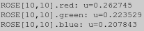
|
Remember the output is on standard error, not the normal standard output, that
way you can use this in a command pipeline, without problems.
Note how the FX expression was executed three times, once for each channel
for just that one pixel. Multiply that by the number of pixels, and you can
imagine the length of the output if "debug()" was not limited to
just one pixel, even for this small image.
FX-like Built-in Operations
Well "-fx" operations is
slow, very slow when processing large images with very complex expressions.
However it represents a way to develop new image processing functions that
previously did not exist in ImageMagick. The result of such development by
users has allows ImageMagick to expand, with new functions and methods, such
as the Color Lookup Table ("-clut").
Generally however once a new method has stabilized using "-fx", the expression is converted
into a faster built-in operation, usually added as part of a group of similar
operators.
These include the follow general image operator and there methods...
As people developed new types of image operations, they usually prototype it
using a slow "-fx" operator
first. When they have it worked out that 'method' is then converted into a
new fast built-in operator in the ImageMagick Core library.
Users are welcome to contribute their own "-fx" expressions (or other defined
functions) that they feel would be an useful addition to IM, but which are not
yet covered by other image operators, if they can be handled by one of the
above generalized operators, it should be reasonably easy to add it.
For example I myself needed a 'mask if color similar' type operation for
comparing two images. This has been added as a new "-compose" method "ChangeMask". This in turn allowed me
to then add a more complex Transparency
Optimization for GIF animations.
What is really needed at this time is a FX expression compiler, that will
pre-interpret the expression into a tighter and faster executable form.
Someone was going to look into this but has since disappeared.
However if speed and complexity is starting to become a problem then it is
probably better to move on to an API scripting language such as PerlMagick. An
example of this using PerlMagick "pixel_fx.pl" is part of that API's distribution.
FX Expressions as Format and Annotate Escapes
As of IM version 6.2.10 you can now use FX Expressions within Image Property
Escaped strings such as used by "-format" and "-annotate" arguments.
The escape sequence '%[fx:...]' is replaced by a number as
a floating point value, calculated once for each image in the current image
sequence.
The FX Expression
however is modified slightly during processing. Specifically...
- The current pixel coordinates '
i', 'j' is fixed
to the value 0, so on its own an image variable only returns the value
from pixel 0,0, unless a 'p{}' index is used.
- Unless a color channel is selected only the red channel value is returned.
- The default image reference '
s' is set to current image,
being annotated or identified.
- The index '
t' returns the index of the image referred to
by 's'.
|
Before IM v6.6.8-6 both FX expression values of "t" image index
and "n" total number of images, were broken, and only returned
a value of 0 and 1 respectively for ALL images. The same goes for the
equivalent percent escapes '%p' and '%n'.
|
For example here I "-annotate" each image with the color of the top left corner of
each image.
convert -size 150x25 xc:DarkRed xc:Green xc:Blue \
-fill white -gravity center \
-annotate 0 '%[fx:t] / %[fx:n] : %[fx:r],%[fx:g],%[fx:b]' \
annotate_fx_%d.gif
| |
![[IM Output]](annotate_fx_0.gif)
![[IM Output]](annotate_fx_1.gif)
![[IM Output]](annotate_fx_2.gif)
|
Notice how the text that is written is different for each image, as
'r' is actually equivalent to 's.p{0,0}.r'. The
same goes for the 'g' and 'b' color channel values.
Of course each one returns a normalized value in the range of 0.0 to 1.0.
To make the output of specific pixel color values easier,
a '%[pixel:...]' escape was also added in IM v6.3.0. This
operator calls the given FX expression once for each channel in each image,
and formats the returned value into a color that IM can handle as a color
argument.
convert -size 300x100 gradient:yellow-limegreen \
-gravity NorthWest -annotate 0 '%[pixel:s.p{0,0}]' \
-gravity Center -annotate 0 '%[pixel:s.p{0,50}]' \
-gravity SouthEast -annotate 0 '%[pixel:s.p{0,99}]' \
annotate_pixel.gif
|
![[IM Output]](annotate_pixel.gif)
You can just output the result directly using a "-format" with the "identify" command.
identify -format '%[fx:atan(1)*4]' null:
| |
![[IM Output]](fx_math.txt.gif)
|
This will mathematically calculate and return the value of PI, though
this value is available as the built-in variable 'pi'.
You can generate random numbers. For example to generate an integer
between -5 and 10 inclusive. Here I use the "info:" equivalent to the "identify" command.
convert xc: -format '%[fx:int(rand()*16)-5]' info:
| |
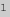
|
For more methods see Identify Alternatives:
Text Output Options.
Also see Border with Rounded
Corner which used a FX
Expressions to generate a draw string based on image width and height
information.
You can Calculate Positions Images using FX
formulas or even position using the size and location of other images (See
Incrementally Calculated Positions).
You can also use FX Escapes in Filename Percent Escapes to generate new
files based on calculated values. For an example, see the final example in
Tile Cropping.
All the above will essentially run the "-format" and thus any containing
FX Expression one for
each image in the current image sequence.
The "-print" operator will
work much like "-identify" except that it is only run once, with access to ALL the
images in the current image sequence. With this operator you can use
'u[{i}]' to access values from any image, unlike the above.
Fx Expressions can be applied to images in other colorspaces, so I can for
example find out the 'Hue' value (in the 'red' channel) for three different
colors.
convert xc:red xc:green xc:blue -colorspace HSL \
-format '%[fx: s.r ]\n' info:
| |
![[IM Output]](fx_hues.txt.gif)
|
You can also use IM for some direct color maths, such as find out the average
color of 'gold', 'yellow', and 'khaki'.
convert xc: -format '%[pixel:(gold+yellow+khaki)/3]' info:
| |
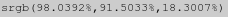
|
While this shows what the color looks like compared to the three source
colors...
convert xc:gold xc:yellow xc:khaki +append \
\( xc: -fx '(gold+yellow+khaki)/3' \) \
-scale 90x30\! -append fx_hues.png
| |
![[IM Output]](fx_hues.png)
|
You can also use "-print"
to print information. This is applied only once against the whole image
sequence. That means you can use this operator to calculate much more complex
'%[fx:...]' expressions involving multiple images.
Accessing data from other images
There is one serious problem with using FX escaped expressions however. IM
does not have direct access to the other images in the current image sequence
when you are creating images. This is just generally not needed, in typical
image creation, as new images generally do not depend on previous in-memory
images.
Basically if you want to gather the color of a specific pixel in a different
image to the one you are drawing on (as above), or are creating a new image,
then the IM core functions have no direct link to the desired info.
For example if you try to create a label with the color of the built-in
"rose:" image pixel 12,26 (a bluish pixel), the direct approach
will fail!
convert rose: label:'%[pixel:p{12,26}]' -delete 0 label_fx_direct.gif
| |
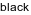
|
Well the rose image does not actually contain any black pixels, so the above
result was wrong.
The way to fix this is to extract the wanted information and save it into the
global IM meta-data. This is passed to all sub-routines in the library core,
including those for image creation.
convert rose: -set option:mylabel '%[pixel:u.p{12,26}]' -delete 0 \
label:'%[mylabel]' label_fx_indirect.gif
| |
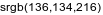
|
This is not intuitive but we now get the correct result.
The special 'option:' tag, tells the "-set" option that you want the given
setting saved as a global Artifact, rather
than as an image 'Attribute' or 'Properties' string, just as "-define" can. However the
"-set" form allows you to
expand Percent Escapes in setting the Artifact, where as "-define" does not.
When the "label:" operator expands its percent escapes, the given
'key' is looked for first as a per image 'attribute' or 'proprieties', but if
it fails to find anything, it will then look for the 'key' in the global Artifact settings. As such the global
'artifact' we created from the previous image is used, even though that image
is no longer present at the time the Artifact
was created.
Basically 'Artifact' settings are global during the life time of the
"convert" command, and thus can be used to pass information
from one image to another.
For programmed API's this situation can be avoided as you can read the
required data directly from the image and generate the label string yourself,
without needing IM to store that information in such a convoluted way.
Evaluate and Function, Freeform Channel Modifiers
Because the FX Operator (see above) is so slow, the
"-evaluate" operator
was added to let you make simple image modifications more quickly.
Later a more complex "-function" operator was added in IM v6.4.8-8, to allow greater
flexibility in complex image adjustments.
These two operators, along with other Image
Level Adjustment Operators such as "-negate", "-level", will probably be most
useful for minor tweaks to grey-scale images, before you apply those images.
Especially in gray-scale images such as used for Background Removal, Highlight and Shadow Overlays, and the
generation and fine-tuning of Image Maps.
Evaluate, Simple Math Operations
The "-evaluate"
operator is basically a fast, but very simple version of "-fx" operator (actually pre-dates its
addition to IM by just a couple of months). However it is limited to just one
simple operation, using a single user provided constant number.
You can find out what functions have been built into evaluate using
This includes the typical mathematical functions 'add',
'subtract', 'multiply', and 'divide'.
against constant values.
Unlike the -fx operator the
values are not normalised to a 0 to 1 range, but remain the real color values
of the image. As such subtracting a value of 50 in a Q8 IM (See Quality and Depth will result in a large
subtraction, but for a Q16 version of IM, it will only be a small hardly
noticeable change.
However if you add a '%' to the argument, that argument will represent a
percentage of the maximum color value (known as 'QuantumRange'
which is equal to ('2quality-1'). This means
you can make your "-evaluate" arguments IM quality level independent, by the
appropriate use of percentages for the appropriate evaluate methods.
For example to just simply replace all color
values in an image to a 50% gray level is very simple and very fast, using
'Set'
convert rose: -evaluate set 50% rose_set_gray.gif
| |
![[IM Output]](rose_set_gray.gif)
|
The "-evaluate"
operator also includes the typical mathematical functions 'add',
'subtract', 'multiply', and 'divide'.
For example, to half the contrast of the image, you can
'divide' it by '2' then
'add' '25% to re-center it around a the
perfect grey.
convert rose: -evaluate divide 2 -evaluate add 25% rose_de-constrast.gif
| |
![[IM Output]](rose_de-constrast.gif)
|
This is a couple of orders of magnitude faster than directly using the
"-fx" operator with
'u/2+.25'. As such you should use this operator in preference to
"-fx" if at all possible.
The major problem with "-evaluate" is that all results are clipped to the 0 to
'QuantumRange' limits (unless you are using a HDRI version of ImageMagick), as each modified
value is saved back into the image data. That means that after any individual
"-evaluate" operation,
the values could be clipped by the 'QuantumRange'.
As such if you try to apply a contrast enhancement function (equivalent to
"-fx '2*u-.25' ") directly
as it stands, you will fail to get the correct results, as the doubled value
will be clipped, before the subtraction is made.
convert rose: -evaluate multiply 2 -evaluate subtract 25% \
rose_contrast.gif
| |
![[IM Output]](rose_contrast.gif)
|
First the 'multiply' will clip all the large color values
to the maximum value, then the 'subtract' will clip the lower
bound values. the result is an incorrect clipping of the upper bounds,
producing a dark and color distorted result.
The direct solution is to 'subtract' the appropriate
constant first (doing the final but correct clip of the lower bounds), before
multiplying, effectively using the equivalent formula
'(u-.125)*2'
convert rose: -evaluate subtract 12.5% -evaluate multiply 2 \
rose_contrast2.gif
| |
![[IM Output]](rose_contrast2.gif)
|
However there are lots of alternatives to this 'clipping' problem. The first
logical one being the newer Polynomial
Function Method (see below). Other alternatives also include using Level Adjustment Operators or even a Level Adjustment by Color, to simply
specify the original color values that you want to stretch out, to fill whole
color range.
Basically be careful with regards to color value clipping when using multiple
"-evaluate" methods.
The "-evaluate"
operator, like "-fx" (and
most other low level IM operators) is "-channel" effected. This allows
you to control an images alpha transparency separately to the color channels.
And yes, like "-fx",
transparency is treated as 'alpha values' and not a 'matte' value.
For example to make an image 50% transparent, as part of a Dissolve type operation.
convert rose: -alpha set -channel A -evaluate divide 2 rose_transparent.png
| |
![[IM Output]](rose_transparent.png)
|
The result is a semi-transparent image, which means when displayed, half the
color you see is the web-pages background color. As such the image shown is
dimmed toward the background color.
Often I have also found that it is often easier to use "-evaluate" on the individual
color channels before separating the various channels into separate images for
specific purposes, (See Separating
Channels).
For example here I use it to do a fast, but unusual form of gray-scaling.
Basically I multiply each channel by the appropriate amount, then separate and
add the channels together to produce an image that has been gray-scaled using
a specific set of color ratios.
convert rose: -channel R -evaluate multiply .2 \
-channel G -evaluate multiply .5 \
-channel B -evaluate multiply .3 \
+channel -separate \
-background black -compose plus -flatten grey_253.png
| |
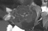
|
Evaluate Math Functions
Included in Evaluate, there are also a set of special purpose mathematical
functions.
These functions are implemented to generally use a normalized color value (0
to 1 range) with the output again normalized so as to fit the full color range
of the image. The Sigmoidal
Contrast function is also an example of this math function fitting.
Power Of
The 'Pow' function (added IM v6.4.1-9) for example works
with normalized color values, and allows users to do image brightness
modifications.
It is exactly equivalent to the pow() C function, (using normalize color
values in a 0 - 1 range)
value = pow(value, constant)
As such to create a 'parabolic' gradient you can use an argument of
'2'. Or use a value of '0.5' to create a 'square
root' gradient. For example...
convert -size 20x600 gradient: -rotate 90 gradient.png
convert gradient.png -evaluate Pow 2 eval_pow_parabola.png
convert gradient.png -evaluate Pow 0.5 eval_pow_sq_root.png
|
![[IM Output]](gradient.png) 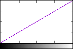
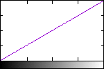
![[IM Output]](eval_pow_parabola_pf.gif) 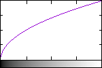
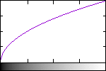
|
The three lower images show the profile of the gradient produced both a
graph and the original image itself. This makes it easier to see how one
gradient image was modified to become another. It was generated using the
Gnuplot graph ploting program, via
the script "im_profile" in
the IM Examples, Scripts directory.
|
This is actually equivalent to the Gamma
Adjustment operator but with the argument inverted. For example
a "-gamma 2" operation would be equivalent to an "-evaluate
pow 0.5" or a 'square root' operation function. Similarly
"-gamma 0.5" is equivelent to squaring using "-evaluate pow
2"
By doing some special gradient manipulations, you can use this method to
convert a linear gradient into a complex circular arc.
convert -size 20x300 gradient: -rotate 90 \
-evaluate Pow 2 -negate -evaluate Pow 0.5 \
-flop \( +clone -flop \) +append eval_circle_arc.png
|
|
![[IM Output]](eval_circle_arc_pf.gif)
|
For those wanting to figure this out, the second line in the above is
equivelent to the FX expression 'sqrt(1-u^2)'.
This generates a single quarter circle arc, which is then Flopped, and Appended together, to produce a half circular arc.
It is also a lot faster than using an FX expression, even
though it requires many more individual (smaller) steps.
See also the more advanced Polynomial
Function.
Logrithmic
The 'Log' function (added IM v6.4.2-1) also works with
normalized values (with a 1.0 added to avoid infinities), with the given
constant being used as the logarithmic base. The actual formula (with
normalized values) is thus...
value = log(value*constant+1.0)/log(constant+1.0)
For example...
convert gradient.png -evaluate Log 10 eval_log.png
|
![[IM Output]](eval_log.png)
|
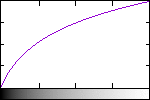
|
This may seem very simular to the previous Pow
Evaluate Method, but it isn't quite the same. 'Log' will
produce an appreciable slope as it approaches '0', where
'Pow' will produce a vertial slope. The value controls the slope.
A logrithmic function is also closely related to an exponential function, which
is currently only implemented as Sigmoidal Contrast Adjustment operator. This contains the same slope
features you can see in the above logrithmic curves. This explains why
"-sigmoidal-contrast" is a better technique for enhancing images
involving low light conditions, than a Gamma
Adjustment or 'power of' curve.
Sine and Cosine
As of IM v6.4.8-8 the 'sin' and 'cos'
methods were added. These methods take the value given in the image and
normalize it into an angle so the full range will cover a full circle of
angles. The result is given a 50% bias and scaled to again fit into the
normal range of values. The constant is used as a multiplier for the value
(and thus the angle) so that 'N' means the function will go around the circle
'N' times over the full value range.
Specifically it defines these function (using normalized values) as...
value = 0.5 * sin( constant*value*2*PI ) + 0.5
value = 0.5 * cos( constant*value*2*PI ) + 0.5
In essence what these functions do is re-map the image values (usually
gray-scale values) into a sine/cosine curve.
For example here I take a gradient image and modify it using these evaluate
methods.
convert gradient.png -evaluate sin 1 eval_sin_1.png
convert gradient.png -evaluate cos 1 eval_cos_1.png
|
![[IM Output]](eval_sin_1.png)
![[IM Output]](eval_cos_1.png)
![[IM Output]](eval_sin_1_pf.gif)
![[IM Output]](eval_cos_1_pf.gif)
Now as the constant parameter is an angle multiplier, the value given to the
evaluate method will create that many peaks over the whole gradient within an
image.
convert gradient.png -evaluate cos 5 -negate eval_cos_5.png
|
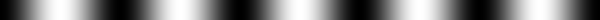
|
![[IM Output]](eval_cos_5_pf.gif)
|
This is perfect for many tasks, from generating ripple or dispersion effects
to generate ripple looking displacement curves.
By using a multiplier constant of '0.5' you can simply convert a linear
gradient into a sine curve gradient, which still has the same slope as the
original. By negating the result you can ensure that the gradient also slopes
correctly.
convert gradient.png -evaluate cos 0.5 -negate eval_cos.5.png
|
|
![[IM Output]](eval_cos.5_pf.gif)
|
Which is great generating smooth gradients for use in overlapping photos.
However these last two "-evaluate" methods are rarely used as they have been superseded by
a more general Sinusoid Function (see below)
that provide more control options, beyond that of a simple frequency option.
Function, Multi-Argument Evaluate
The above wave generators proved to be extremely useful, especially with Distortion Image Mapping. But it was found
that a much finer control of the functions was needed, requiring more than one
parameter.
Because of this the "-function" operator was added in IM v6.4.8-9.
Basically "-function"
is a multi-argument form of "-evaluate". However unlike the Evaluate
Operator, these operators like the mathematical operators, all the
functions above work only on normalised channel values (0.0 to 1.0 range) of
the image, which in most cases makes them easier to use.
Polynomial Function
The 'polynomial' method will take any number of values,
and will modify the color values in an image according the exact expression
given, much faster than the FX Operator can.
-function Polynomial a,b,c,...
Each value will be used as a coefficient from the highest order to the lowest,
to produce a polynomial with the number of terms given.
For example an argument of '4,-4,1' will generate the polynomial
expression equivalent to the "-fx" expression " 4*u^2 - 4*u + 1 ".
If you know your high school maths you should know then that this polynomial
function produces a parabolic curve going from 1.0 to 0.0 then back to 1.0,
over the input ('u') color range 0.0 to 1.0. That is it will
make, black and white colors 'white', and make perfect grays, 'black'.
convert gradient.png -function Polynomial 4,-4,1 func_parabola.png
|
|
![[IM Output]](func_parabola_pf.gif)
|
You can even make a much more complex gradient, for example a quartic
polynomial, which was the result of generating a Curve Level Adjustment, using a set of
'level control points'. This is typically used to adjust the colors of an
image to give it various shading effects.
convert gradient.png -function Polynomial '-25, 53, -36, 8.3, 0.2' \
func_quartic.png
|
|
![[IM Output]](func_quartic_pf.gif)
|
Of course simple linear modification is also possible, exactly as you get
if you used a Level Operator...
convert gradient.png -function Polynomial '4, -1.5' func_linear.png
|
![[IM Output]](func_linear.png)
|
![[IM Output]](func_linear_pf.gif)
|
Note however that you can not use 'Polynomial' to do a full Threshold operation, due to the need for
infinite coefficients to do so, though you can get pretty close.
A single value is naturally just a constant, and results in a direct
assignment of that value. In other words it is just like the "-evaluate Set " method, in this
case to a 33% gray value.
convert gradient.png -function Polynomial 0.33 func_constant.png
|
![[IM Output]](func_constant.png)
|
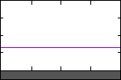
|
By combining a 'Polynomial' with other math functions you can
create even more complex gradient modifications.
For example by taking the square root of a polynomial, I can create a true
circular arc over a linear gradient. The equivalent of the very slow
"-fx" expression
'sqrt( -4*u^2 + 4*u + 0 )'...
convert gradient.png -function Polynomial -4,4,0 -evaluate Pow 0.5 \
func_circle_arc.png
|
![[IM Output]](func_circle_arc.png)
|
![[IM Output]](func_circle_arc_pf.gif)
|
See also the Pow Evaluate Method for an
alternative to the above.
Sinusoid Function
The 'Sinusoid' function method is a much more advanced
version of the "-evaluate" methods 'sin' and 'cos', and
can in fact replicate those functions, but you have much better controls over
how it modifies the color values in an image.
-function Sinusoid frequency,phase,amplitude,bias
And is implemented using the formula...
value = ampl * sin(2*PI( freq*value + phase/360 ) ) + bias
This may seem complex but it ensures the function is easily to use.
Only the first value 'frequency', which works exactly as per above, is
required with all the other parameters being optional.
By default it will generate a Sine Curve.
convert gradient.png -function Sinusoid 1 func_sine.png
|
|
![[IM Output]](func_sine_pf.gif)
|
By adding a 'phase' argument in degrees, you can specify the starting
angle for the curve. Allowing you convert the default sine curve into a
cosine.
convert gradient.png -function Sinusoid 1,90 func_cosine.png
|
|
![[IM Output]](func_cosine_pf.gif)
|
By adjusting the 'frequency', and 'phase' I can directly convert a linear
gradient into a smooth sinusoidal gradient going from black to white (minimum
to maximum along a Sine curve). See Evaluate Cosine
Method for a less direct method.
convert gradient.png -function Sinusoid 0.5,-90 func_sine_grad.png
|
![[IM Output]](func_sine_grad.png)
|
![[IM Output]](func_sine_grad_pf.gif)
|
The next two optional values, 'amplitude' and 'bias' controls the scale and
center-line of sinusoidal curve. For example, here I make a wave (negated
cosine curve) that oscillates between white and gray (values ranging from
0.75 ±0.25, or 0.5 to 1.0), starting and finishing
on white.
convert gradient.png -function Sinusoid 5,90,.25,.75 func_sine_bias.png
|
![[IM Output]](func_sine_bias.png)
|
![[IM Output]](func_sine_bias_pf.gif)
|
Becareful with these last parameters as they could easy cause the waveform to
exceed the bounds of the color value range, and thus be clipped (unless you
are using a HDRI version of ImageMagick).
Arcsin Function
The inverse sinusoid function 'Arcsin' was added to IM
v6.5.3-0. This is a special curve that was needed to generate a Cylindrical Displacement Map.
It parameters are...
-function Arcsin width,center,range,bias
And is implemented using the formula...
value = range/PI * asin(2/width*( value - center ) ) + bias
By default values (if not defined) '1, 0.5, 1, 0.5' ensures the
the function is centered so as to cover the whole color range from
0,0 to 1,1.
convert gradient.png -function Arcsin 1 func_arcsin.png
|
![[IM Output]](func_arcsin.png)
|
![[IM Output]](func_arcsin_pf.gif)
|
By halving the 'width' of the resulting curve you get...
convert gradient.png -function Arcsin 0.5 func_arcsin_width.png
|
|
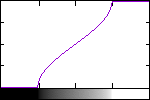
|
The 'center' will let you reposition the curve according to the
input grey values.
convert gradient.png -function Arcsin 0.4,0.7 func_arcsin_center.png
|
![[IM Output]](func_arcsin_center.png)
|
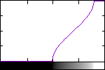
|
The 'range' argument allows to reduce the output range of the
color values, and the 'bias' will adjust the center of that
range.
convert gradient.png -function Arcsin 0.5,0.5,0.5,0.5 func_arcsin_range.png
|
![[IM Output]](func_arcsin_range.png)
|
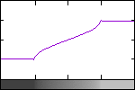
|
Note how the values that are invalid as a result of the function are handled.
This this allows better control when the function is used in displacements,
and provides ways in which to clean them up. The actual values used are is
'bias ±range/2', as you would expect.
Note that if either the 'width' or the 'range' are made negative
the slope of the function will be flipped, as a result of that negative value.
convert gradient.png -function Arcsin -1 func_arcsin_neg.png
|
![[IM Output]](func_arcsin_neg.png)
|
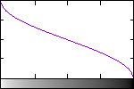
|
Arctan Function
The 'Arctan' method was added to IM v6.5.3-1.
Its parameters are...
-function Arctan slope,center,range,bias
And is implemented using the formula...
value = range/PI * atan(slope*PI*( value - center ) ) + bias
As you can see it is almost exactly the same as the 'Arcsin' function, with
only a small change to make it more useful. It even has the same set of
default values (if not defined) '1, 0.5, 1.0, 0.5'.
This means that if you specify a slope value of '1.0' the slope
of the histogram change will produce a 1:1 change around pure gray, (no
scaling) while making white and black a more gray value. For example
convert gradient.png -function Arctan 1 func_arctan.png
|
|
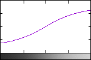
|
That is the middle part of the gradient is actually left unchanged, with only
the black and white ends becoming de-contrasted.
As the 'slope' of the curve becomes larger, the gradient in the center
will become stronger (more compressed in the middle), by that amount.
convert gradient.png -function Arctan 10 func_arctan_10.png
|
|
![[IM Output]](func_arctan_10_pf.gif)
|
This in many ways is very similar to a Sigmoidal Contrast color
modification operator. However a 'Arctan' function will NEVER
actually reach the output range limits of pure black and white. It will
approach those limits but never cross them.
Similarly to the previous functions, (and Sigmoidal Contrast) the second
argument will adjust the position of the curve relative to the input gradient
values.
convert gradient.png -function Arctan 10,.7 func_arctan_center.png
|
![[IM Output]](func_arctan_center.png)
|
![[IM Output]](func_arctan_center_pf.gif)
|
And the last two arguments 'range' will let you adjust output range of
values that will be generated. For example by expanding this value slightly
you can ensure that it will completely cover the whole range of possible
values.
convert gradient.png -function Arctan 5,0.7,1.2 func_arctan_range.png
|
![[IM Output]](func_arctan_range.png)
|
![[IM Output]](func_arctan_range_pf.gif)
|
However if you are really wanting to generate curve to modify the whole
contrast of an image in this way, it is more typical to use the Sigmoidal Contrast Operator,
which is designed for this purpose.
The more typical use of an 'Arctan' gradient function to create a
curve that will very quickly approach a specific value but not exceed that
value. It is these limiting values that the 'range' and 'bias'
arguments control.
For example, this curve will modify the gradient in an image to produce very
sharp threshold around the input gray level of 0.7, but with the values
changing between the range limits of 0.5 and 1.0
convert gradient.png -function Arctan 15,0.7,0.5,0.75 func_arctan_typ.png
|
|
![[IM Output]](func_arctan_typ_pf.gif)
|
This is something that Sigmoidal
Contrast can not generate.
Mathematics on Gradient Images
Now the above functions provide some very basic transformations for gradient
images. But what if you want to do some mathematics with two or more gradient
images. That is modify one gradient using the gradient of another image.
For this you need to use the special Mathematical
Compose Methods (such as "Plus" and "Divide").
Before we start however, I would like to give you one word of warning.
If your gradient images are purely grey-scale images, with no alpha channels,
then you can use the Mathematical Compose
Methods directly. However if you want to limit these methods to
a specific channel, or apply them to the alpha (transparency) channel, then
you need to ensure that you set the appropriate "-channel" setting, with no
special 'Sync' channel flag. See Image Mathematics using Image Composition
for more details.
Normally using Mathematical Compose Methods is
not really that difficult. The complications arise when you have gradients
that also contain a 'bias'. That is the gradient should represent a value of
'zero' at '50% grey, and cover a range from -1 (black) to +1 (white). Such
images are often used for Distortion Image
Mapping.
As such performing maths on 'biased gradients' is the real problem,
and what will be looked at more specifically here.
Attenuate a Biased Gradient
For example, here I want to create a sine wave, but one that starts out
small, but then gets larger in amplitude.
This known as 'attenuating' a biased gradient. Or putting it another way,
multiply a biased gradient by another absolute gradient. It is also how
'Amplitude Modulation' such as in AM radio works!
So first we need a sine wave, which we can simply generate from a linear
gradient...
convert -size 5x300 gradient: -rotate 90 math_linear.png
convert math_linear.png -evaluate sine 12 math_sine.png
|
![[IM Output]](math_linear_pf.gif)
![[IM Output]](math_sine_pf.gif)
Now to attenuate this we multiply the sine wave with a linear gradient,
using a Multiply alpha composition...
convert math_sine.png math_linear.png \
-compose Multiply -composite math_sine_2.png
|

![[IM Output]](math_sine_2_pf.gif)
But to use this in say a Water Ripples,
Displacement Map the wave must remain centered around a perfect gray. To
do this we need to add a bias to the original image. This happened to be the
same function we used to multiply the original image, negated and divided by
two....
convert math_linear.png -negate -evaluate divide 2 math_bias.png
convert math_sine_2.png math_bias.png \
-compose Plus -composite math_attenuated.png
|
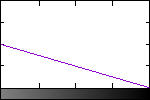
![[IM Output]](math_attenuated_pf.gif)
And so we have a linearly attenuated Sine Wave Gradient, suitable for use in a
displacement map.
Of course you can do the whole process all in the one command, and it does not
have to be a simple linear attenuation either. For example here I attenuate
the high frequency Sine wave, using a negated Cosine wave, instead of a linear
gradient.
convert math_linear.png -evaluate cos 1 -negate math_cosine_peak.png
convert math_sine.png math_cosine_peak.png \
\( -clone 0,1 -compose multiply -composite \) \
\( -clone 1 +level 50%,0 \
-clone 2 -compose plus -composite \) \
-delete 0--2 math_cosine_atten.png
|
attenuate
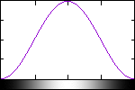
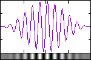
As of IM v6.5.4-3 it is now possible to do the all the steps above all in one
compose method, using the special Mathematics Compose Method. Basically by recognising that an attenuation
operation is the formula Sc*Dc-.5*Sc+.5 or the arguments,
"1,-.5,0,.5".
convert math_sine.png math_cosine_peak.png \
-compose Mathematics -set option:compose:args 1,-.5,0,.5 \
-composite math_attenuate.png
|
|
![[IM Output]](math_attenuate_pf.gif)
|
The same result can also be achieved by first adjusting the attenuation
gradient using a Polynomial Function and
then using a Exclusion compose operator,
to merge the images.
convert math_sine.png \( math_cosine_peak.png -function polynomial -.5,.5 \) \
-compose Exclusion -composite math_poly_excl.png
|
|
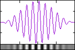
|
Multiply Biased Gradients
But what if BOTH functions are biased so a perfect gray means zero,
and black and white represent the range from -1 to +1?
Well this is a little more complex as you can't just multiply them and expect
it to come out right, as the multiplication can consist of a negative values.
This requires some care so as to ensure you don't end up clipping the values
and getting the right negation of the curve in the resulting image.
The trick is to break up the multiplication into multiple steps. That is
A × B can also be written
as A × abs(B) × sign(B).
By doing this you avoid multiplying by a negative value, which can't be stored
in a normal gradient image. So all we need to do is take one of the bias
gradients and separate it into two parts so they can be applied to the other
gradient appropriately.
The 'sign()' of a biased gradient, or getting a mask of what
parts are negative, can get extracted by using a Threshold on the gradient at the bias
level. You can later selectively negate the other gradient using a Composite Difference, with that threshold
image.
The 'abs()' of a biased gradient can be extracted easily using Solarize, then negating and doubling
(using Level) that to get the absolute
value of the gradient ranging from 0.0 to 1.0. As we will also need the bias
offset as part of the multiply (as per Attenuate above), you can directly use the negated and half-scaled
solarize output, before it is converted into the gradients absolute value.
So lets convert one gradient into these three components.
convert math_cosine_peak.png -threshold 50% -negate math_m_sign.png
convert math_cosine_peak.png -solarize 50% math_m_bias.png
convert math_m_bias.png -level 50%,0 math_m_abs.png
|
|
|
![[IM Output]](math_m_sign_pf.gif)
|
Sign of Gradient
white = negative
| |
|
![[IM Output]](math_m_bias_pf.gif)
|
Bias Offset
| |
|
![[IM Output]](math_m_abs_pf.gif)
|
Absolute Value
| |
Now that we have these three parts of one of the gradient images, we can merge
them with the other gradient. To do this we multiply by the absolute value,
re-add the bias, and then negate the parts that should be made negative.
convert math_sine.png math_m_abs.png \
-compose Multiply -composite math_m_1.png
convert math_m_1.png math_m_bias.png \
-compose Plus -composite math_m_2.png
convert math_m_2.png math_m_sign.png \
-compose Difference -composite math_multiply.png
|
And that is a perfect multiplication of two bias gradient images!
Here it is again but all in the one command...
convert math_sine.png math_cosine_peak.png \
\( -clone 1 -threshold 50% -negate \) \
\( -clone 1 -solarize 50% \) \
\( -clone 3 -level 50%,0 \) \
\( -clone 0,4 -compose multiply -composite \
-clone 3 -compose plus -composite \
-clone 2 -compose difference -composite \) \
-delete 0--2 math_multiply_2.png
|
![[IM Output]](math_multiply_2_pf.gif)
One final note, unlike Attenuation, this Multiply
of biased gradients is commutative. That is swapping the input images does
not effect the final result.
As the above is equivelent to the formula 2*Sc*Dc-Sc-Dc+1, as of
IM v6.5.4-3, you can implement the above complex steps as a single 'Mathematics' compose method using
the argument "2,-1,-1,1".
convert math_sine.png math_cosine_peak.png \
-compose Mathematics -set option:compose:args 2,-1,-1,1 \
-composite math_bias_multiply.png
|
|
![[IM Output]](math_bias_multiply_pf.gif)
|
That is vastly easier and faster method than the dozen or more steps needed
without this argumented compose method.
It so happens that once I saw that formula, I realised that this happens to be
simply the negation of the 'Exclusion' compose method. Weird but true. As such the following
will also generate the same zero baised multiply.
convert math_sine.png math_cosine_peak.png \
-compose exclusion -composite -negate math_excl_neg.png
|
|
![[IM Output]](math_excl_neg_pf.gif)
|
Adding Biased Gradients
With the advent of the 'Mathematics' compose method,
adding biased gradients is also relativally easy. The equivelent FX formula is
"u+v-0.5" or a compose argument of "0,1,1,-.5".
For example the following was a Fourier
Transform Example that I had hand generated, requiring the addition
of 3 biased sinusoids, and a constant DC value.
convert math_linear.png -function sinusoid 3.5,0,.25 wave_1.png
convert math_linear.png -function sinusoid 1.5,-90,.13 wave_2.png
convert math_linear.png -function sinusoid 0.6,-90,.07 wave_3.png
convert wave_1.png wave_2.png wave_3.png -background gray40 \
-compose Mathematics -set option:compose:args 0,1,1,-.5 \
-flatten added_waves.png
|
![[IM Output]](wave_1_pf.gif)
![[IM Output]](wave_2_pf.gif)
![[IM Output]](wave_3_pf.gif)
![[IM Output]](added_waves_pf.gif)
Note in the above how I used the "-flatten" operator with a "-background" setting to
implement a mutliple image composition. Or in this case a 'Biased Sum' of all
the given images plus the background constant.
Frequency Modulation
By applying a function directly to the output of another function, you do NOT
produce a simple result. The reason is that all these math functions are
applied to the gradient 'value' of individual pixels, and not against the
x value of the pixel in the gradient.
For example....
convert gradient.png -evaluate sin 0.5 -normalize \
-evaluate cos 8 math_cos_var.png
|
![[IM Output]](math_cos_var.png)
|
|
This generates a very complex function that is essentually equivelent to
cos( 8 * sin( {value}/2 ) )
In other words a variable frequency, where the frequency varies with the
gradient of the first sine curve.
Basically the faster the gradient changes in the original image, the smaller
the distance between the peaks. However the height (amplitude) of the peak do
not vary.
This is actually how 'Frequency Modulation' works, where a seemingly
simple function produces a very complex result.
Under Construction
Miscellaneous Image Transformation Techniques.
These have not been exampled yet, but are some basic IM developed transforms
that may provide useful. If you have an interesting effect please contribute.
pixelize an image
resize an image down 10 then scale the image 10 to produce blocks
of roughly averaged color.
For example...
convert input.jpg -resize 10% -sample 1000% output.jpg
De-skew slightly rotated images
-deskew {threshold}
straighten an image. A threshold of 40% works for most images.
Use -set option:deskew:auto-crop {width} to auto crop the image. The set
argument is the pixel width of the image background (e.g 40).
Programmically we auto crop by running a median filter across the image
to eliminate salt-n-pepper noise. Next we get the image bounds of the
median filter image with a fuzz factor (e.g. -fuzz 5%). Finally we
crop the original image by the bounds. The code looks like this:
median_image=MedianFilterImage(image,0.0,exception);
geometry=GetImageBoundingBox(median_image,exception);
median_image-DestoryImage(median_image);
print(" Auto-crop geometry: %lux%lu%+ld%+ld",
geometry.width,geometry.height, geometry.x,geometry.y);
crop_image=CropImage(rotate_image,&geometry,exception);
See Trimming 'Noisy' Images
Segmentation
look at scripts
divide_vert
segment_image
for some simple scripts I wrote to segment well defined images into
smaller parts. I hope to get simple segmentation functions like this
into the core library, to allow for things like automatic sub-division of
GIF animations, and seperating images and diagrams from scanned documents.
Created: 15 March 2004
Updated: 18 June 2009
Author: Anthony Thyssen, <Anthony.Thyssen@gmail.com>
Examples Generated with:
URL: https://legacy.imagemagick.org/Usage/transform/
| | | | |
![[IM Output]](poloroid.png)
![[IM Output]](math_m_1_pf.gif)
![[IM Output]](math_multiply_pf.gif)
![[IM Text]](message_size.txt.gif)
![[IM Text]](rose_diff_pae.txt.gif)
![[IM Text]](shade_30_norm.txt.gif)
![[IM Text]](shade_21_norm.txt.gif)
{kind=link}
{kind=link}
{kind=link}
{kind=link}
{kind=link}
{kind=link}
{kind=link}
{kind=link}
{kind=link}
{kind=link}
{kind=link}
{kind=link}
{kind=link}
{kind=link}
{kind=link}
{kind=link}
{kind=link}
{kind=link}
{kind=link}
{kind=link}
{kind=link}
{kind=link}
{kind=link}
{kind=link}
{kind=link}
{kind=link}
{kind=link}
{kind=link}
{kind=link}
{kind=link}
{kind=link}
{kind=link}
{kind=link}
{kind=link}
{kind=link}
{kind=link}
{kind=link}
{kind=link}
{kind=link}
{kind=link}
{kind=link}
{kind=link}
{kind=link}
{kind=link}
{kind=link}
{kind=link}
{kind=link}
{kind=link}
{kind=link}
{kind=link}
{kind=link}
{kind=link}
{kind=link}
{kind=link}
{kind=link}
{kind=link}
{kind=link}
{kind=link}
{kind=link}
{kind=link}
{kind=link}
{kind=link}
{kind=link}
{kind=link}
{kind=link}
{kind=link}
{kind=link}
{kind=link}
{kind=link}
{kind=link}
{kind=link}
{kind=link}
{kind=link}
{kind=link}
{kind=link}
{kind=link}
{kind=link}
{kind=link}
{kind=link}
{kind=link}
{kind=link}
{kind=link}
{kind=link}
{kind=link}
{kind=link}
{kind=link}
{kind=link}
{kind=link}
{kind=link}
{kind=link}
{kind=link}
{kind=link}
{kind=link}
{kind=link}
{kind=link}
{kind=link}
{kind=link}
{kind=link}
{kind=link}
{kind=link}